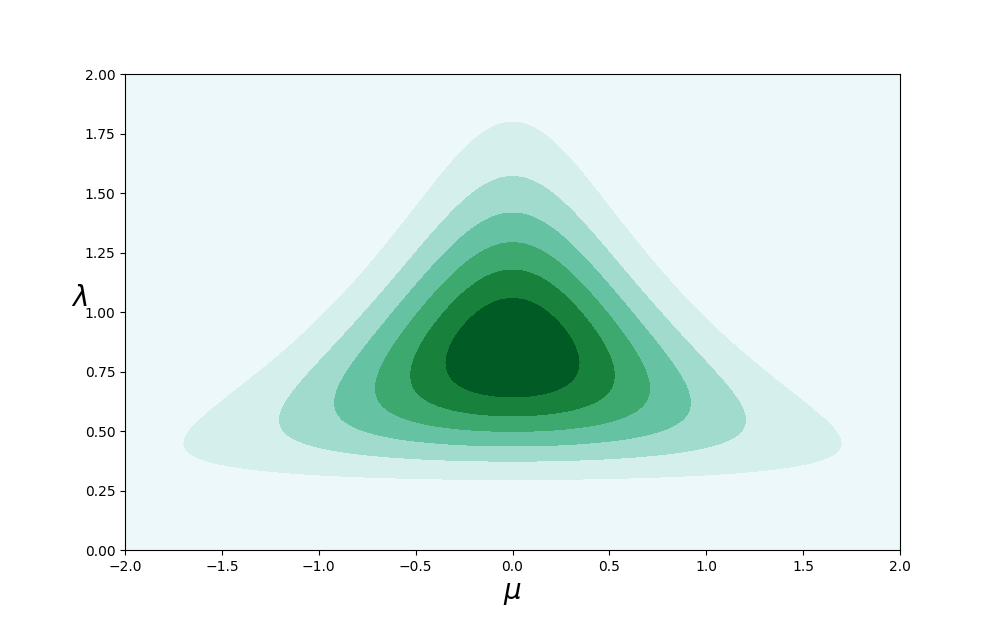

Probability Distributions
Table of Contents
- 1. Binary Variables
- 2. Multinomial Variables
- 2.1. The Dirichlet distribution
- 2.2. The Gaussian Distribution
- 2.2.1. Conditional Gaussian distributions
- 2.2.2. Marginal Gaussian distributions
- 2.2.3. Bayes’ theorem for Gaussian variables
- 2.2.4. Maximum likelihood for the Gaussian
- 2.2.5. TODO Sequential estimation
- 2.2.6. Bayesian inference for the Gaussian
- 2.2.7. Student’s t-distribution
- 2.2.8. Periodic variables
- 2.2.9. Mixtures of Gaussians
import numpy as np from numpy.linalg import norm import matplotlib.pyplot as plt from mpl_toolkits.mplot3d import Axes3D from matplotlib import cm import pandas as pd from scipy import linalg from scipy.special import i0, i1 from scipy.stats import dirichlet from scipy.stats import beta from scipy.stats import uniform from scipy.stats import norm as normal from scipy.stats import multivariate_normal from scipy.stats import gamma from scipy.stats import t from scipy.stats import vonmises from scipy.stats import vonmises_line from sklearn.mixture import GaussianMixture from matplotlib.colors import LogNorm def Rot(x): theta_ = x*np.pi/180 return np.array([[np.cos(theta_), -np.sin(theta_)], [np.sin(theta_), np.cos(theta_)]])
In Chapter 1, we emphasized the central role played by probability theory in the solution of pattern recognition problems. We turn now to an exploration of some particular examples of probability distributions and their properties. As well as being of great interest in their own right, these distributions can form building blocks for more complex models and will be used extensively throughout the book. The distributions introduced in this chapter will also serve another important purpose, namely to provide us with the opportunity to discuss some key statistical concepts, such as Bayesian inference, in the context of simple models before we encounter them in more complex situations in later chapters.
One role for the distributions discussed in this chapter is to model the probability distribution \(p(\mathbf{x})\) of a random variable \mathbf{x}, given a finite set \(\mathbf{x}_1, \cdots , \mathbf{x}_N\) of observations. This problem is known as density estimation(密度估计). For the purposes of this chapter, we shall assume that the data points are independent and identically distributed. It should be emphasized that the problem of density estimation is fundamentally ill-posed, because there are infinitely many probability distributions that could have given rise to the observed finite data set. Indeed, any distribution \(p(\mathbf{x})\) that is nonzero at each of the data points \(\mathbf{x}_1, \cdots , \mathbf{x}_N\) is a potential candidate. The issue of choosing an appropriate distribution relates to the problem of model selection that has already been encountered in the context of polynomial curve fitting in Chapter 1 and that is a central issue in pattern recognition.
We begin by considering the binomial and multinomial distributions for discrete random variables and the Gaussian distribution for continuous random variables. These are specific examples of parametric distributions(参数分布), so-called because they are governed by a small number of adaptive parameters, such as the mean and variance in the case of a Gaussian for example. To apply such models to the problem of density estimation, we need a procedure for determining suitable values for the parameters, given an observed data set. In a frequentist treatment, we choose specific values for the parameters by optimizing some criterion, such as the likelihood function. By contrast, in a Bayesian treatment we introduce prior distributions over the parameters and then use Bayes’ theorem to compute the corresponding posterior distribution given the observed data.
在频率学家的观点中, 我们通过最优化某些准则(例如似然函数)来确定参数的具体值. 相反, 在贝叶斯观点中, 给定观察数据, 我们引入参数的先验分布, 然后使用贝叶斯定理来计算对应后验概率分布。
We shall see that an important role is played by conjugate priors(共轭先验), that lead to posterior distributions having the same functional form as the prior, and that therefore lead to a greatly simplified Bayesian analysis. For example, the conjugate prior for the parameters of the multinomial distribution is called the Dirichlet distribution(狄利克雷分布), while the conjugate prior for the mean of a Gaussian is another Gaussian. All of these distributions are examples of the exponential family of distributions, which possess a number of important properties, and which will be discussed in some detail.
One limitation of the parametric approach is that it assumes a specific functional form for the distribution, which may turn out to be inappropriate for a particular application. An alternative approach is given by nonparametric(非参数) density estimation methods in which the form of the distribution typically depends on the size of the data set. Such models still contain parameters, but these control the model complexity rather than the form of the distribution. We end this chapter by considering three nonparametric methods based respectively on histograms, nearest-neighbors, and kernels.
1 Binary Variables
We begin by considering a single binary random variable \(x \in \{0, 1\}\). For example, \(x\) might describe the outcome of flipping a coin, with \(x = 1\) representing ‘heads’, and \(x = 0\) representing ‘tails’. We can imagine that this is a damaged coin so that the probability of landing heads is not necessarily the same as that of landing tails. The probability of \(x = 1\) will be denoted by the parameter μ so that
\begin{equation} p(x=1|\mu) = \mu \end{equation}where \(0 \leqslant \mu \leqslant 1\), from which it follows that \(p(x = 0|\mu) = 1 − \mu\). The probability distribution over \(x\) can therefore be written in the form
\begin{equation}\label{Bernoulli-distribution} \text{Bern}(x|\mu) = \mu^{x}(1-\mu)^{1-x} \end{equation}which is known as the Bernoulli distribution. It is easily verified that this distribution is normalized and that it has mean and variance given by
\begin{align} \mathbb{E}[x] &= \mu \label{mean-of-Bernoulli-distribution} \\ var[x] &= \mu(1-\mu) \label{variance-of-Bernoulli-distribution} \end{align}Now suppose we have a data set \(\mathcal{D} = \{x_1,\cdots,x_N\}\) of observed values of x. We can construct the likelihood function, which is a function of μ, on the assumption that the observations are drawn independently from \(p(x|\mu)\), so that
\begin{equation} p(\mathcal{D}|\mu) = \prod_{n=1}^Np(x_i|\mu) = \prod_{n=1}^N \mu^{x_n}(1-\mu)^{1-x_n} \end{equation}In a frequentist setting, we can estimate a value for μ by maximizing the likelihood function, or equivalently by maximizing the logarithm of the likelihood. In the case of the Bernoulli distribution, the log likelihood function is given by
\begin{equation}\label{equ:2.5} \ln p(\mathcal{D}|\mu) = \sum_{i=1}^N \ln p(x_n|\mu) = \sum_{i=1}^N\{ x_n\ln\mu + (1-x_n)\ln(1-\mu) \} \end{equation}At this point, it is worth noting that the log likelihood function depends on the \(N\) observations \(x_n\) only through their sum \(\sum_n x_n\). This sum provides an example of a sufficient statistic(充分统计量) for the data under this distribution, and we shall study the important role of sufficient statistics in some detail. If we set the derivative of \(\ln p(\mathcal{D}|\mu)\) with respect to μ equal to zero, we obtain the maximum likelihood estimator
\begin{equation}\label{equ:2.7} \mu_{ML} = \frac{1}{N}\sum_{n=1}^N x_n \end{equation}which is also known as the sample mean(样本均值). If we denote the number of observations of \(x = 1\) (heads) within this data set by \(m\), then we can write (\ref{equ:2.7}) in the form
\begin{equation}\label{equ:2.8} \mu_{ML} = \frac{m}{N} \end{equation}so that the probability of landing heads is given, in this maximum likelihood framework, by the fraction of observations of heads in the data set.
Now suppose we flip a coin, say, 3 times and happen to observe 3 heads. Then \(N = m = 3\) and \(\mu_{ML} = 1\). In this case, the maximum likelihood result would predict that all future observations should give heads. Common sense tells us that this is unreasonable, and in fact this is an extreme example of the over-fitting associated with maximum likelihood. We shall see shortly how to arrive at more sensible conclusions through the introduction of a prior distribution over \(\mu\).
We can also work out the distribution of the number \(m\) of observations of \(x = 1\), given that the data set has size \(N\). This is called the binomial distribution(二项分布), and from (\ref{equ:2.5}) we see that it is proportional to $μm(1 − μ)N−m. In order to obtain the normalization coefficient we note that out of \(N\) coin flips, we have to add up all of the possible ways of obtaining \(m\) heads, so that the binomial distribution can be written
\begin{equation}\label{binomial-distribution} \text{Bin}(m|N,\mu) = \binom{N}{m}\mu^{m}(1-\mu)^{N-m} \end{equation}where
\begin{equation} \binom{N}{m} = \frac{N!}{(N-m)!m!} \end{equation}is the number of ways of choosing \(m\) objects out of a total of \(N\) identical objects. Figure 1 shows a plot of the binomial distribution for \(N = 10\) and \(\mu = 0.25\).
from scipy.stats import binom fig, ax = plt.subplots(1, 1) n, p = 10, 0.25 x = np.arange(11) y = binom.pmf(x, n, p) ax.bar(x,y,color="b") ax.set_xlabel("$m$") plt.savefig("img/fig:2.1.png")
Figure 1: Histogram plot of the binomial distribution (binomial-distribution) as a function of m for \(N =10\) and \(\mu = 0.25\).
The mean and variance of the binomial distribution can be found by using the result of Exercise 1.10(?), which shows that for independent events the mean of the sum is the sum of the means, and the variance of the sum is the sum of the variances. Because \(m = x_1 + \cdots + x_N\), and for each observation the mean and variance are given by (mean-of-Bernoulli-distribution) and (variance-of-Bernoulli-distribution), respectively, we have
\begin{align} \mathbb{E}[m] \equiv \sum_{m=0}^N m\text{Bin}(m|N,\mu) &= N\mu \label{mean-of-binomial-distribution} \\ var[m] \equiv \sum_{m=0}^N (m-\mathbb{E}[m])^2\text{Bin}(m|N,\mu) &= N\mu(1-\mu) \label{variance-of-binomial-distribution} \end{align}These results can also be proved directly using calculus.
1.1 TODO The beta distribution
We have seen in (\ref{qeu:2.8}) that the maximum likelihood setting for the parameter μ in the Bernoulli distribution, and hence in the binomial distribution, is given by the fraction of the observations in the data set having x = 1. As we have already noted, this can give severely over-fitted results for small data sets. In order to develop a Bayesian treatment for this problem, we need to introduce a prior distribution \(p(\mu)\) over the parameter μ. Here we consider a form of prior distribution that has a simple interpretation as well as some useful analytical properties. To motivate this prior, we note that the likelihood function takes the form of the product of factors of the form \(\mu^{x}(1 − \mu)^{1−x}\). If we choose a prior to be proportional to powers of μ and \((1 − \mu)\), then the posterior distribution, which is proportional to the product of the prior and the likelihood function, will have the same functional form as the prior. This property is called conjugacy(共轭性) and we will see several examples of it later in this chapter. We therefore choose a prior, called the beta distribution, given by
\begin{equation}\label{beta-distribution} \text{Beta}(\mu|a,b) = \frac{\Gamma(a+b)}{\Gamma{a}\Gamma(b)} \mu^{a-1}(1-\mu)^{b-1} \end{equation}where \(\gamma(x)\) is the gamma function defined by
\begin{equation}\label{gamma-function} \Gamma(x) \equiv \int_0^{\infty} u^{x-1}e^{-u}du \end{equation}and the coefficient in (beta-distribution) ensures that the beta distribution is normalized, so that
\begin{equation} \int_0^1 \text{Beta}(\mu|a,b) = 1 \end{equation}The mean and variance of the beta distribution are given by
\begin{align} \mathbb{E}[x] &= \frac{a}{a+b} \label{mean-of-beta-distribution} \\ var[\mu] &= \frac{ab}{(a+b)^2(a+b+1)} \label{variance-of-beta-distribution} \end{align}The parameters \(a\) and \(b\) are often called hyperparameters(超参数) because they control the distribution of the parameter μ. Figure 2 shows plots of the beta distribution for various values of the hyperparameters.
def create_beta_plot(a, b, ax, *args): x = np.linspace(0, 1, 100) ax[args].plot(x, beta.pdf(x, a, b), 'r-', lw=1, alpha=0.6) ax[args].annotate("$a={0}$\n$b={1}$".format(a, b), xy=(0.25, 2.2)) ax[args].set_ylim(0, 3) ax[args].set_xlabel("$\mu$") fig, ax = plt.subplots(2, 2) create_beta_plot(0.1, 0.1, ax, 0, 0) create_beta_plot(1, 1, ax, 0, 1) create_beta_plot(2, 3, ax, 1, 0) create_beta_plot(8, 4, ax, 1, 1) fig.subplots_adjust(hspace=0.3) fig.savefig("img/fig:2.2.png") plt.close("all")
Figure 2: Plots of the beta distribution \(\text{Beta}(\mu|a, b)\) given by (beta-distribution) as a function of μ for various values of the hyperparameters \(a\) and \(b\).
The posterior distribution of μ is now obtained by multiplying the beta prior (beta-distribution) by the binomial likelihood function (binomial-distribution) and normalizing. Keeping only the factors that depend on μ, we see that this posterior distribution has the form
\begin{equation}\label{posterior-distribution-of-beta-distribution-simple} p(\mu|m,l,a,b)\varpropto \mu^{m+a-1}(1-\mu)^{l+b-1} \end{equation}where \(l = N − m\), and therefore corresponds to the number of ‘tails’ in the coin example. We see that (posterior-distribution-of-beta-distribution-simple) has the same functional dependence on μ as the prior distribution, reflecting the conjugacy properties of the prior with respect to the likelihood function. Indeed, it is simply another beta distribution, and its normalization coefficient can therefore be obtained by comparison with (beta-distribution) to give
\begin{equation}\label{posterior-distribution-of-beta-distribution} p(\mu|m,l,a,b) = \frac{\Gamma(m+a+b+l)}{\Gamma(m+a)\Gamma(l+b)}\mu^{m+a-1}(1-\mu)^{l+b-1} \end{equation}We see that the effect of observing a data set of \(m\) observations of \(x = 1\) and \(l\) observations of \(x = 0\) has been to increase the value of \(a\) by \(m\), and the value of \(b\) by \(l\), in going from the prior distribution to the posterior distribution. This allows us to provide a simple interpretation of the hyperparameters \(a\) and \(b\) in the prior as an effective number of observations(有效观测数) of \(x = 1\) and \(x = 0\), respectively. Note that \(a\) and \(b\) need not be integers. Furthermore, the posterior distribution can act as the prior if we subsequently observe additional data. To see this, we can imagine taking observations one at a time and after each observation updating the current posterior distribution by multiplying by the likelihood function for the new observation and then normalizing to obtain the new, revised posterior distribution. At each stage, the posterior is a beta distribution with some total number of (prior and actual) observed values for \(x = 1\) and \(x = 0\) given by the parameters \(a\) and \(b\). Incorporation of an additional observation of \(x = 1\) simply corresponds to incrementing the value of \(a\) by \(1\), whereas for an observation of \(x = 0\) we increment \(b\) by \(1\). Figure 3 illustrates one step in this process.
fig = plt.figure(figsize=(12, 3)) ax = fig.subplots(1, 3) a, b = 2, 2 x = np.linspace(0, 1, 100) y_plot = [beta.pdf(x, a, b), x, beta.pdf(x, a + 1, b)] for index, (y, annotation) in enumerate( zip(y_plot, ["prior", "likelihood", "posterior"])): ax[index].set_ylim(0, 2) ax[index].set_xlim(0, 1) ax[index].set_ylim(0, 2) ax[index].plot(x, y, 'r-', lw=1, alpha=0.6) ax[index].annotate(annotation, xy=(0.1, 1.6)) fig.savefig("img/fig:2.3.png") plt.close("all")
Figure 3: Illustration of one step of sequential Bayesian inference. The prior is given by a beta distribution with parameters \(a = 2, b = 2\), and the likelihood function, given by (\ref{binomial-distribution}) with \(N = m = 1\), corresponds to a single observation of \(x = 1\), so that the posterior is given by a beta distribution with parameters \(a = 3, b = 2\).
We see that this sequential(顺序) approach to learning arises naturally when we adopt a Bayesian viewpoint. It is independent of the choice of prior and of the likelihood function and depends only on the assumption of i.i.d. data. Sequential methods make use of observations one at a time, or in small batches(批次), and then discard them before the next observations are used. They can be used, for example, in real-time learning scenarios where a steady stream of data is arriving, and predictions must be made before all of the data is seen. Because they do not require the whole data set to be stored or loaded into memory, sequential methods are also useful for large data sets. Maximum likelihood methods can also be cast into a sequential framework.
If our goal is to predict, as best we can, the outcome of the next trial, then we must evaluate the predictive distribution of \(x\), given the observed data set \mathcal{D}. From the sum and product rules of probability, this takes the form
\begin{equation} p(x=1|\mathcal{D}) = \int_0^1 p(x=1|\mu)p(\mu|\mathcal{D})d\mu = \int_0^1 \mu p(\mu|\mathcal{D})d\mu = \mathbb{E}[\mu|\mathcal{D}] \end{equation}Using the result (posterior-distribution-of-beta-distribution) for the posterior distribution \(p(\mu|\mathcal{D})\), together with the result (mean-of-beta-distribution) for the mean of the beta distribution, we obtain
\begin{equation}\label{interpretation-of-a-beta-distribution} p(x=1|\mathcal{D}) = \frac{m+a}{m+a+l+b} \end{equation}which has a simple interpretation as the total fraction of observations (both real observations and fictitious prior observations) that correspond to \(x = 1\). Note that in the limit of an infinitely large data set \(m, l \rightarrow\infty\) the result (interpretation-of-a-beta-distribution) reduces to the maximum likelihood result (\ref{equ:2.8}). As we shall see, it is a very general property that the Bayesian and maximum likelihood results will agree in the limit of an infinitely large data set. For a finite data set, the posterior mean for μ always lies between the prior mean and the maximum likelihood estimate for μ corresponding to the relative frequencies of events given by (\label{equ:2.7}).
From Figure 2, we see that as the number of observations increases, so the posterior distribution becomes more sharply peaked. This can also be seen from the result (variance-of-beta-distribution) for the variance of the beta distribution, in which we see that the variance goes to zero for \(a \rightarrow\infty\) or \(b \rightarrow\infty\). In fact, we might wonder whether it is a general property of Bayesian learning that, as we observe more and more data, the uncertainty represented by the posterior distribution will steadily decrease.
To address this, we can take a frequentist view of Bayesian learning and show that, on average, such a property does indeed hold. Consider a general Bayesian inference problem for a parameter θ for which we have observed a data set \mathcal{D}, described by the joint distribution $p(\theat, \mathcal{D}). The follow result
\begin{equation} \mathbb{E}_{\pmb{\theta}}[\pmb{\theta}] = \mathbb{E}_{\mathcal{D}}[\mathbb{E}_{\pmb{\theta}}[\pmb{\theta}|\mathcal{D}}]] \end{equation}where
\begin{align} \end{align}says that the posterior mean of θ, averaged over the distribution generating the data,is equal to the prior mean of θ. Similarly, we can show that
\begin{equation} \end{equation}
2 Multinomial Variables
Binary variables can be used to describe quantities that can take one of two possible values. Often, however, we encounter discrete variables that can take on one of \(K\) possible mutually exclusive states. Although there are various alternative ways to express such variables, we shall see shortly that a particularly convenient representation is the 1-of-K scheme in which the variable is represented by a K-dimensional vector \mathbf{x} in which one of the elements \(x_k\) equals \(1\), and all remaining elements equal \(0\). So, for instance if we have a variable that can take \(K = 6\) states and a particular observation of the variable happens to correspond to the state where \(x_3 = 1\), then \mathbf{x} will be represented by
\begin{equation} \mathbf{x} = (0,0,1,0,0,0)^T. \end{equation}Note that such vectors satisfy \(\sum_{k=1}^K x_k = 1\). If we denote the probability of \(x_k = 1\) by the parameter μk, then distribution of \mathbf{x} is given
\begin{equation}\label{equ:2.26} p(\mathbf{x}|\pmb{\mu}) = \prod_{k=1}^K\mu^{x_k} \end{equation}where \(\pmb{\mu} = (\mu_1, \cdots, \mu_K)^T\), and the parameters μk are constrained to satisfy \(\mu_k\geqslant 0\) and \(\sum_k \mu_k = 1\), because they represent probabilities. The distribution (\ref{equ:2.26}) can be regarded as a generalization of the Bernoulli distribution to more than two outcomes. It is easily seen that the distribution is normalized
\begin{equation} \sum_{\mathbf{x}} p(\mathbf{x}|\pmb{\mu}) = \sum_{k=1}^K \mu_k = 1 \end{equation}and that
\begin{equation} \mathbb{E}[\mathbf{x}|\pmb{\mu}] = \sum_{\mathbf{x}} p(\mathbf{x}|\pmb{\mu})\mathbf{x} = (\mu_1,\cdots,\mu_M)^T = \pmb{\mu} \end{equation}Now consider a data set \mathcal{D} of \(N\) independent observations \(x_1, \cdots , x_N\) . The corresponding likelihood function takes the form
\begin{equation}\label{equ:2.29} p(\mathcal{D}|\pmb{\mu}) = \prod_{n=1}^N\prod_{k=1}^K \mu_k^{x_{nk}} = \prod_{k=1}^K \mu_K^{(\sum_n x_{nk})} = \prod_{k=1}^K \mu_k^{m_k} \end{equation}We see that the likelihood function depends on the \(N\) data points only through the K quantities
\begin{equation} m_k = \sum_n x_{nk} \end{equation}which represent the number of observations of \(x_k = 1\). These are called the sufficient statistics(充分统计量) for this distribution.
In order to find the maximum likelihood solution for \(\pmb{\mu}\), we need to maximize \(\ln p(\mathcal{D}|\pmb{\mu})\) with respect to \(μ\mu_k\) taking account of the constraint that the \(\mu_k\) must sum to one. This can be achieved using a Lagrange multiplier λ and maximizing
\begin{equation}\label{Lagrange-multiplier-multinomial-likelihood} \sum_{k=1}^K m_k\ln \mu_k + \lambda \left( \sum_{k=1}^K\mu_k -1 \right) \end{equation}Setting the derivative of (Lagrange-multiplier-multinomial-likelihood) with respect to \(\mu_k\) to zero, we obtain
\begin{equation}\label{equ:2.32} \mu_k = -m_k/\lambda \end{equation}We can solve for the Lagrange multiplier λ by substituting (\ref{equ:2.32}) into the constraint \(\sum_k \mu_k = 1\) to give \(\lambda = − N\). Thus we obtain the maximum likelihood solution in the form
\begin{equation}\label{maximum-likelihood-of-multinomial-distribution} \mu_k^{MK} = \frac{m_k}{N} \end{equation}which is the fraction of the \(N\) observations for which \(x_k = 1\).
We can consider the joint distribution of the quantities \(m1_ , \cdots , m_K\) , conditioned on the parameters \(\pmb{\mu}\) and on the total number \(N\) of observations. From (\ref{equ:2.29}) this takes the form
\begin{equation}\label{multinomial-distribution} \text{Mult}(m_1,m_2,\cdots,m_k|\pmb{\mu},N) = \binom{N}{m_1m_2 \cdots m_K}\prod_{k=1}^K\mu_k^{m_k} \end{equation}which is known as the multinomial distribution(多项式分布). The normalization coefficient is the number of ways of partitioning \(N\) objects into \(K\) groups of size \(m_1 , \cdots , m_K\) and is given by
\begin{equation}\label{equ:2.34} \binom{N}{m_1m_2 \cdots m_K} = \frac{N!}{m_1!m_2! \cdots \m_k!}. \end{equation}Note that the variables \(m_k\) are subject to the constraint
\begin{equation} \sum_{k=1}^{K}m_k = N \end{equation}2.1 The Dirichlet distribution
We now introduce a family of prior distributions for the parameters \(\{μ_k\}\) of the multinomial distribution (\ref{equ:2.34}). By inspection of the form of the multinomial distribution, we see that the conjugate prior is given by
\begin{equation} p(\pmb{\mu|\pmb{\alpha}}) \varpropto \prod_{k=1}^K \mu_k^{(\alpha_k-1)} \end{equation}where \(0 \leqslant \mu_k 1\) and \(\sum_k \mu_k = 1\). Here \(\alpha_1,\cdots,\alpha_K\) are the parameters of the distribution, and α denotes \((\alpha_1,\cdots,\alpha_K)^T\). Note that, because of the summation constraint, the distribution over the space of the \(\{\mu_k\}\) is confined to a simplex of dimensionality \(K − 1\), as illustrated for \(K = 3\) in Figure 4.
Figure 4: The Dirichlet distribution over three variables \(\mu_1,\mu_2,\mu_3\) is confined to a simplex (a bounded linear manifold) of the form shown, as a consequence of the constraints \(0\leqslant\mu_k\leqslant1\) and \(\sum_k \mu_k =1\).
The normalized form for this distribution is by
\begin{equation}\label{Dirichlet-distribution} \text{Dir}(\pmb{\mu}|\pmb{\alpha}) = \frac{\Gamma(\alpha_0)}{\Gamma(\alpha_1),\cdots,\Gamma(\alpha_K)} \prod_{k=1}^K \mu_k^{\alpha_k-1} \end{equation}which is called the Dirichlet distribution(狄利克雷分布). Here \(\Gamma(x)\) is the gamma function defined by (gamma-function) while
\begin{equation} \alpha_0 = \sum_{k=1}^K \alpha_k \end{equation}Plots of the Dirichlet distribution over the simplex, for various settings of the parameters αk, are shown in Figure 5.
A = np.array([[-1, 1, 0], [-0.5, -0.5, 1]]) A[0] = A[0] / linalg.norm(A[0]) A[1] = A[1] / linalg.norm(A[1]) x_1 = np.arange(1, 100 - 1) x_2 = np.zeros((98, 98)) for index, value in enumerate(x_1): x_2[index, 0:(98 - index)] = np.arange(1, 100 - value) x = np.array([[0, 0, 0]]) for index1, value1 in enumerate(x_1): for index2, value2 in enumerate(x_2[index1, 0:(98 - index1)]): x = np.concatenate((x, np.array([[value1, value2, 100 - value1 - value2]]))) x = x[1::] / 100 from mpl_toolkits.mplot3d import Axes3D from matplotlib import cm fig = plt.figure(figsize=(12, 6)) Alpha_ = [[0.1] * 3, [1] * 3, [10] * 3] for index, alpha_ in enumerate(Alpha_): value = [dirichlet.pdf(_, alpha_) for _ in x] y0, y1 = [(A @ _)[0] for _ in x], [(A @ _)[1] for _ in x] data = pd.DataFrame({"value": value, "y0": y0, "y1": y1}) ax = fig.add_subplot(1, 3, index + 1, projection='3d') ax.set_xlabel("x") ax.set_ylabel("y") ax.set_zlabel("z") ax.set_zlim(0, 20) ax.view_init(10, 45) im = ax.plot_trisurf( data["y0"], data["y1"], data["value"], cmap="gist_ncar") plt.savefig("img/fig:2.5.png") plt.close("all")
Figure 5: Plots of the Dirichlet distribution over three variables, where the two horizontal axes are coordinates in the plane of the simplex and the vertical axis corresponds to the value of the density. Here \(\{\alpha_k\} = 0.1\) on the left plot, \(\{\alpha_k \} = 1\) in the centre plot, and \(\{\alpha_k \} = 10\) in the right plot.
Multiplying the prior (Dirichlet-distribution) by the likelihood function (multinomial-distribution), we obtain the posterior distribution for the parameters \(\{\mu_k\}\) in the form
\begin{equation} p(\pmb{\mu}|\mathcal{D},\pmb{\alpha}) \varpropto p(\mathcal{D}|\pmb{\mu})p(\pmb{\mu}|\pmb{\alpha}) \varpropto \prod_{k=1}^K \mu_k^{\alpha_k+m_k-1} \end{equation}We see that the posterior distribution again takes the form of a Dirichlet distribution, confirming that the Dirichlet is indeed a conjugate prior for the multinomial. This allows us to determine the normalization coefficient by comparison with (Dirichlet-distribution) so that
\begin{equation}\label{posterior-distribution-of-multinomial-variables} \begin{split} p(\pmb{\mu}|\mathcal{D},\pmb{\alpha}) &= \text{Dir}(\pmb{\mu}|\pmb{\alpha}+\mathbf{m})\\ &= \frac{\Gamma({\alpha_0+N})}{\Gamma({\alpha_0+m_1})\cdots\Gamma({\alpha_0+m_K})} \prod_{k=1}^K \mu_k^{\alpha_k+m_k-1} \end{split} \end{equation}where we have denoted \(m = (m_1, \cdots, m_K )^T\). As for the case of the binomial distribution with its beta prior, we can interpret the parameters αk of the Dirichlet prior as an effective number of observations of \(x_k = 1\).
Note that two-state quantities can either be represented as binary variables and modelled using the binomial distribution (binomial-distribution) or as 1-of-2 variables and modelled using the multinomial distribution (multinomial-distribution) with \(K = 2\).
2.2 The Gaussian Distribution
The Gaussian, also known as the normal distribution, is a widely used model for the distribution of continuous variables. In the case of a single variable \(x\), the Gaussian distribution can be written in the form
\begin{equation}\label{Gaussian-distribution-single-variable} \mathcal{N}(x|\mu,\sigma^2) = \frac{1}{(2\pi\sigma^2)^{1/2}} \exp\left\{ -\frac{1}{2\sigma^2}(x-\mu)^2 \right\} \end{equation}where \(\mu\) is the mean and \(\sigma^2\) is the variance. For a D-dimensional vector \(\mathbf{x}\), the multivariate Gaussian distribution takes the form
\begin{equation}\label{Gaussian-distribution-multivariate} \mathcal{N}(\mathbf{x}|\pmb{\mu},\pmb{\Sigma}) = \frac{1}{(2\pi)^{D/2}}\frac{1}{|\pmb{\Sigma}|^{1/2}} \exp\{ -\frac{1}{2}(\mathbf{x}-\pmb{\mu})^T\pmb{\Sigma}^{-1}(\mathbf{x}-\pmb{\mu}) \} \end{equation}where \(\pmb{\mu}\) is a D-dimensional mean vector, \(\pmb{\Sigma}\) is a \(D \times D\) covariance matrix, and \(|\pmb{\Sigma}|\) denotes the determinant of \(\pmb{\Sigma}\).
The Gaussian distribution arises in many different contexts and can be motivated from a variety of different perspectives. For example, we have already seen that for a single real variable, the distribution that maximizes the entropy is the Gaussian. This property applies also to the multivariate Gaussian.
Another situation in which the Gaussian distribution arises is when we consider the sum of multiple random variables. The central limit theorem(中心极限定理) (due to Laplace) tells us that, subject to certain mild(温和的) conditions, the sum of a set of random variables, which is of course itself a random variable, has a distribution that becomes increasingly Gaussian as the number of terms in the sum increases (Walker, 1969). We can illustrate this by considering \(N\) variables \(x_1 , \cdots , x_N\) each of which has a uniform distribution over the interval \([0, 1]\) and then considering the distribution of the mean \((x_1 + \cdots + x_N )/N\) . For large \(N\) , this distribution tends to a Gaussian, as illustrated in Figure [fig:2.6]]. In practice, the convergence to a Gaussian as \(N\) increases can be very rapid. One consequence of this result is that the binomial distribution (binomial-distribution), which is a distribution over m defined by the sum of \(N\) observations of the random binary variable \(x\), will tend to a Gaussian as \(N \rightarrow\infty\) (see Figure 1 for the case of \(N = 10\)).
from pacal import * import matplotlib.pyplot as plt fig = plt.figure(figsize=(12,4)) U = UniformDistr() for index, N in enumerate([1,2,10]): ax = fig.add_subplot(1,3,index+1) ax.set_ylim(0,5) ax.set_xlim(0,1) S = iid_average(U,N) S.hist(bins=20,color="blue", edgecolor="b") ax.annotate("$N=%d$"%N, xy=(0.1,4)) plt.savefig("img/fig:2.6.png") plt.close("all")
Figure 6: Histogram plots of the mean of \(N\) uniformly distributed numbers for various values of \(N\). We observe that as \(N\) increases, the distribution tends towards a Gaussian.
The Gaussian distribution has many important analytical properties, and we shall consider several of these in detail. As a result, this section will be rather more technically involved than some of the earlier sections, and will require familiarity with various matrix identities. However, we strongly encourage the reader to become proficient(精通的) in manipulating Gaussian distributions using the techniques presented here as this will prove invaluable in understanding the more complex models presented in later chapters.
We begin by considering the geometrical form of the Gaussian distribution. The functional dependence of the Gaussian on \mathbf{x} is through the quadratic form
\begin{equation}\label{Mahalanobis-distance} \Delta^2 = (\mathbf{x} - \pmb{\mu})^T\pmb{\Sigma}^{-1}(\mathbf{x}-\pmb{\mu}) \end{equation}which appears in the exponent. The quantity \(\Delta\) is called the Mahalanobis distance(马氏距离) from \(\pmb{\mu}\) to \(\mathbf{x}\) and reduces to the Euclidean distance when \(\Sigma\) is the identity matrix. The Gaussian distribution will be constant on surfaces in x-space for which this quadratic form is constant.
First of all, we note that the matrix Σ can be taken to be symmetric, without loss of generality, because any antisymmetric component would disappear from the exponent. Now consider the eigenvector equation for the covariance matrix
\begin{equation}\label{eigenvector-equation-of-covariance-Gauss-distribution} \Sigma\mathbf{u}_i = \lambda_i\mathbf{u}_i \end{equation}where \(i = 1, \cdots, D\). Because \(\Sigma\) is a real, symmetric matrix its eigenvalues will be real, and its eigenvectors can be chosen to form an orthonormal set, so that
\begin{equation}\label{equ:2.46} \mathbf{u}_i^T\mathbf{u}_j = I_{ij} \end{equation}where \(I_{ij}\) is the \(i, j\) element of the identity matrix and satisfies
\begin{equation} I_ij = \left\{\begin{aligned} 1,\quad &\text{if}\quad i=j \\ 0,\quad &\text{otherwise} \end{equation}The covariance matrix \(\Sigma\) can be expressed as an expansion in terms of its eigenvectors in the form
\begin{equation}\label{equ:2.48} \Sigma = \sum_{i=1}^{D}\lambda_i\mathbf{u}_i\mathbf{u}_i^T \end{equation}and similarly the inverse covariance matrix \(\Sigma^{-1}\) can be expressed as
\begin{equation}\label{equ:2.49} \Sigma^{-1} =\sum_{i=1}^{D}\frac{1}{\lambda_i}\mathbf{u}_i\mathbf{u}_i^T \end{equation}Substituting (\ref{equ:2.49}) into (Mahalanobis-distance), the quadratic form becomes
\begin{equation} \Delta^2 = \sum_{i=1}^D \frac{y_i^2}{\lambda_i} \end{equation}where we have defined
\begin{equation}\label{equ:2.51} y_i = \mathbf{u}_i(\mathbf{x}-\pmb{\mu}) \end{equation}We can interpret \(\{y_i\}\) as a new coordinate system defined by the orthonormal vectors \(u_i\) that are shifted and rotated with respect to the original \(x_i\) coordinates. Forming the vector \(\mathbf{y} = (y_1,\cdots,y_D)^T\), we have
\begin{equation} \mathbf{y} = \mathbf{U}(\mathbf{x}-\pmb{\mu}) \end{equation}where \(\mathbf{U}\) is a matrix whose rows are given by \(u^T_i\). From (\ref{equ:2.46}) it follows that \(\mathbf{U}\) is an orthogonal matrix, i.e., it satisfies \(\mathbf{U}\mathbf{U}^T = \mathbf{I}\), and hence also \(\mathbf{U}^T\mathbf{U} = \mathbf{I}\), where \(\mathbf{I}\) is the identity matrix.
The quadratic form, and hence the Gaussian density, will be constant on surfaces for which (\ref{equ:2.51}) is constant. If all of the eigenvalues \(\lambda_i\) are positive, then these surfaces represent ellipsoids, with their centers at \(\mu\) and their axes oriented along \(u_i\), and with scaling factors in the directions of the axes given by $λi1/2, as illustrated in Figure 7.
Figure 7: The red curve shows the elliptical surface of constant probability density for a Gaussian in a two-dimensional space \(\mathbf{x} = (x_1,x_2)\) on which the density is \(\exp(−1/2)\) of its value at \(x = \mu\). The major axes of the ellipse are defined by the eigenvectors \(u_i\) of the covariance matrix, with corresponding eigenvalues \(\lambda_i\).
For the Gaussian distribution to be well defined, it is necessary for all of the eigenvalues \(\lambda_i\) of the covariance matrix to be strictly positive, otherwise the distribution cannot be properly normalized. A matrix whose eigenvalues are strictly positive is said to be positive definite(正定). In Chapter 12(?), we will encounter Gaussian distributions for which one or more of the eigenvalues are zero, in which case the distribution is singular and is confined to a subspace of lower dimensionality. If all of the eigenvalues are nonnegative, then the covariance matrix is said to be positive semidefinite(半正定).
Now consider the form of the Gaussian distribution in the new coordinate system defined by the \(y_i\). In going from the \(\mathbf{x}\) to the \(\mathbf{y}\) coordinate system, we have a Jacobian matrix \(\mathbf{J}\) with elements given by
\begin{equation} J_{ij} = \frac{\partial x_i}{\partial y_j} = U_{ji} \end{equation}where \(U_{ji}\) are the elements of the matrix \(\mathbf{U}^T\). Using the orthonormality property of the matrix \(\mathbf{U}\), we see that the square of the determinant of the Jacobian matrix is
\begin{equation} |\mathbf{J}|^2 = |\mathbf{U}^T|^2 = |\mathbf{U}^T||\mathbf{U}| = |\mathbf{U}^T\mathbf{U}| = |\mathbf{I}| = 1 \end{equation}and hence \(|\mathbf{J}| = 1\). Also, the determinant \(|\Sigma|\) of the covariance matrix can be written as the product of its eigenvalues, and hence
\begin{equation}\label{equ:2.55} |\Sigma|^{1/2} = \prod_{j=1}^D \lambda_j^{1/2}. \end{equation}Thus in the \(y_j\) coordinate system, the Gaussian distribution takes the form
\begin{equation} p(\mathbf{y}) = p(\mathbf{x})|\mathbf{J}| = \prod_{j=1}^D\frac{1}{(2\pi\lambda_j)^{1/2}} \exp\left\{ -\frac{y_i^2}{2\lambda_i} \right\} \end{equation}which is the product of \(D\) independent univariate Gaussian distributions. The eigenvectors therefore define a new set of shifted and rotated coordinates with respect to which the joint probability distribution factorizes into a product of independent distributions. The integral of the distribution in the \(\mathbf{y}\) coordinate system is then
\begin{equation} \int p(\mathbf{y})d\mathbf{y} = \prod_{j=1}^D \int_{-\infty}^{\infty} \frac{1}{(2\pi\lambda_j)^{1/2}} \exp\left\{ -\frac{y_j^2}{2\lambda_j} \right\} dy_j =1 \end{equation}where we have used the result (\ref{equ:1.48}) for the normalization of the univariate Gaussian. This confirms that the multivariate Gaussian (Gaussian-distribution-multivariate) is indeed normalized.
We now look at the moments of the Gaussian distribution and thereby provide an interpretation of the parameters \(\pmb{\mu}\) and \(\Sigma\). The expectation of \(\mathbf{x}\) under the Gaussian distribution is given by
\begin{equation} \begin{split} \mathbb{E}[\mathbf{x}] &= \frac{1}{(2\pi)^{D/2}}\frac{1}{|\Sigma|^{1/2}} \int \exp \left\{ -\frac{1}{2}(\mathbf{x}-\pmb{\mu})^T\Sigma^{-1}(\mathbf{x}-\pmb{\mu}) \right\}\mathbf{x}d\mathbf{x} \\ &= \frac{1}{(2\pi)^{D/2}}\frac{1}{|\Sigma|^{1/2}} \int \exp \left\{ -\frac{1}{2}\mathbf{z}^T\Sigma^{-1}\mathbf{z} \right\}(\mathbf{z}+\pmb{\mu})d\mathbf{z} \end{split} \end{equation}where we have changed variables using \(\mathbf{z} = \mathbf{x} − \pmb{\mu}\). We now note that the exponent is an even function of the components of \(\mathbf{z}\) and, because the integrals over these are taken over the range \((-\infty,\infty)\), the term in \(\mathbf{z}\) in the factor \((\mathbf{z} + \pmb{\mu})\) will vanish by symmetry. Thus
\begin{equation} \mathbb{E}[\mathbf{x}] = \pmb{\mu} \end{equation}and so we refer to \(\pmb{\mu}\) as the mean of the Gaussian distribution.
We now consider second order moments of the Gaussian. In the univariate case, we considered the second order moment given by \(\mathbb{E}[x^2]\). For the multivariate Gaussian, there are \(D^2\) second order moments given by \(\mathbb{E}[x_ix_j]\), which we can group together to form the matrix \(\mathbb{E}[\mathbf{x}\mathbf{x}^T]\). This matrix can be written as
\begin{equation} \begin{split} \mathbb{E}[\mathbf{x}\mathbf{x}^T] &= \frac{1}{(2\pi)^{D/2}}\frac{1}{|\Sigma|^{1/2}} \int \exp \left\{ -\frac{1}{2}(\mathbf{x}-\pmb{\mu})^T\Sigma^{-1}(\mathbf{x}-\pmb{\mu}) \right\}\mathbf{x}\mathbf{x}^Td\mathbf{x} \\ &= \frac{1}{(2\pi)^{D/2}}\frac{1}{|\Sigma|^{1/2}} \int \exp \left\{ -\frac{1}{2}\mathbf{z}^T\Sigma^{-1}\mathbf{z} \right\}(\mathbf{z}+\pmb{\mu})(\mathbf{z}+\pmb{\mu})^Td\mathbf{z} \end{split} \end{equation}where again we have changed variables using \(\mathbf{z} = \mathbf{x} − \pmb{\mu}\). Note that the cross-terms involving \(\pmb{\mu}\mathbf{z}^T\) and \(\mathbf{z}\pmb{\mu}^T\) will again vanish by symmetry. The term \(\pmb{\mu}\pmb{\mu}^T\) is constant and can be taken outside the integral, which itself is unity because the Gaussian distribution is normalized. Consider the term involving \(\mathbf{z}\mathbf{z}^T\). Again, we can make use of the eigenvector expansion of the covariance matrix given by (eigenvector-equation-of-covariance-Gauss-distribution), together with the completeness of the set of eigenvectors, to write
\begin{equation} \mathbf{z} = \sum_{j=1}^D y_j\mathbf{u}_j \end{equation}where \(y_j = \mathbf{u}^T_j\mathbf{z}\), which gives
\begin{equation}\label{equ:2.62} \begin{split} &\frac{1}{(2\pi)^{D/2}}\frac{1}{|\Sigma|^{1/2}} \int \exp \left\{ -\frac{1}{2}\mathbf{z}^T\Sigma^{-1}\mathbf{z} \right\}\mathbf{z}\mathbf{z}^Td\mathbf{z} \\ &= \frac{1}{(2\pi)^{D/2}}\frac{1}{|\Sigma|^{1/2}} \sum_{i=1}^D\sum_{j=1}^D \mathbf{u}_i\mathbf{u}_j^T \int \exp \left\{ -\sum_{k=1}^D \frac{y_k^2}{2\lambda_k} \right\} y_iy_j d\mathbf{y} \\ &= \sum_{i=1}^D\mathbf{u}_i\mathbf{u}_i^T \frac{1}{(2\pi)^{D/2}}\frac{1}{|\Sigma|^{1/2}}\int \exp\left\{ -\sum_{k=1}^D \frac{y_k^2}{2\lambda_k} \right\}y_i^2 d\mathbf{y} \\ &= \sum_{i=1}^D\mathbf{u}_i\mathbf{u}_i^T \frac{1}{(2\pi)^{D/2}}\frac{1}{|\Sigma|^{1/2}} (2\pi)^{D/2}\lambda_i\prod_{k=1}^D\lambda_k^{1/2} \\ &= \sum_{i=1}^D \mathbf{u}_i\mathbf{u}_i^T\lambda_i = \Sigma \end{split} \end{equation}where we have made use of the eigenvector equation (eigenvector-equation-of-covariance-Gauss-distribution), together with the fact that the integral on the right-hand side of the middle line vanishes by symmetry unless \(i = j\), and in the final line we have made use of the results (gaussian-distribution-single-second-order-moment) and (\ref{equ:2.55}), together with (\ref{equ:2.48}). Thus we have
\begin{equation} \mathbb{E}[\mathbf{x}\mathbf{x}^T] = \pmb{\mu}\pmb{\mu}^T + \Sigma. \end{equation}For single random variables, we subtracted the mean before taking second moments in order to define a variance. Similarly, in the multivariate case it is again convenient to subtract off the mean, giving rise to the covariance(协方差) of a random vector \(\mathbf{x}\) defined by
\begin{equation} var[\mathbf{x}] = \mathbb{E}[(\mathbf{x} - \mathbb{E}[\mathbf{x}])(\mathbf{x} - \mathbb{E}[\mathbf{x}])^T] \end{equation}For the specific case of a Gaussian distribution, we can make use of \(E[\mathbf{x}] = \pmb{\mu}\), together with the result (\ref{equ:2.62}), to give
\begin{equation}\label{covariance-of-Gaussian-distribution} \text{cov}[\mathbf{x}] = \Sigma \end{equation}Because the parameter matrix \(\Sigma\) governs the covariance of \(\mathbf{x}\) under the Gaussian distribution, it is called the covariance matrix.
Although the Gaussian distribution (Gaussian-distribution-multivariate) is widely used as a density model, it suffers from some significant limitations. Consider the number of free parameters in the distribution. A general symmetric covariance matrix \(\Sigma\) will have \(D(D + 1)/2\) independent parameters, and there are another \(D\) independent parameters in \(\pmb{\mu}\), giving \(D(D + 3)/2\) parameters in total. For large \(D\), the total number of parameters therefore grows quadratically with \(D\), and the computational task of manipulating and inverting large matrices can become prohibitive. One way to address this problem is to use restricted forms of the covariance matrix. If we consider covariance matrices that are diagonal(对角的), so that \(\Sigma = diag(\sigma_i^2)\), we then have a total of \(2D\) independent parameters in the density model. The corresponding contours of constant density are given by axis-aligned ellipsoids. We could further restrict the covariance matrix to be proportional to the identity matrix, \(\Sigma = \sigma^2\mathbf{I}\), known as an isotropic(各向同性的) covariance, giving \(D + 1\) independent parameters in the model and spherical surfaces of constant density. The three possibilities of general, diagonal, and isotropic covariance matrices are illustrated in Figure 8. Unfortunately,where as such approaches limit the number of degrees of freedom in the distribution and make inversion of the covariance matrix a much faster operation, they also greatly restrict the form of the probability density and limit its ability to capture interesting correlations in the data.
plot_numert = 100 plot_x = np.linspace(-4, 4, plot_numert) plot_y = np.linspace(-4, 4, plot_numert) X, Y = np.meshgrid(plot_x, plot_y) pos = np.dstack((X, Y)) Cov = np.empty((3, 2, 2)) Cov[0] = np.array([[2, 1], [1, 2]]) Cov[1] = np.array([[2, 0], [0, 1]]) Cov[2] = np.array([[2, 0], [0, 2]]) fig = plt.figure(figsize=(12, 4)) for index, cov in enumerate(Cov): Z = multivariate_normal.pdf(pos, cov=cov) ax = fig.add_subplot(1, 3, index + 1) ax.contourf(X, Y, Z, cmap="BuGn") cs = ax.contour(X, Y, Z, 2, colors='red', linewidth=0.5) ax.clabel(cs, inline=True, fontsize=10, colors="k") plt.savefig("img/fig:2.8.png") plt.close("all")
Figure 8: Contours of constant probability density for a Gaussian distribution in two dimensions in which the covariance matrix is (a) of general form, (b) diagonal, in which the elliptical contours are aligned with the coordinate axes, and (c) proportional to the identity matrix, in which the contours are concentric circles.
A further limitation of the Gaussian distribution is that it is intrinsically(内在的) unimodal(单峰的) (i.e., has a single maximum) and so is unable to provide a good approximation to multimodal distributions. Thus the Gaussian distribution can be both too flexible, in the sense of having too many parameters, while also being too limited in the range of distributions that it can adequately represent. We will see later that the introduction of latent variables(潜在变量), also called hidden variables(隐藏变量) or unobserved variables(未观察变量), allows both of these problems to be addressed. In particular, a rich family of multimodal(多峰的) distributions is obtained by introducing discrete latent variables leading to mixtures of Gaussians, as discussed in Section 2.2.9. Similarly, the introduction of continuous latent variables, as described in Chapter 12(?), leads to models in which the number of free parameters can be controlled independently of the dimensionality \(D\) of the data space while still allowing the model to capture the dominant correlations in the data set. Indeed, these two approaches can be combined and further extended to derive a very rich set of hierarchical models that can be adapted to a broad range of practical applications. For instance, the Gaussian version of the Markov random field(马尔科夫随机场), which is widely used as a probabilistic model of images, is a Gaussian distribution over the joint space of pixel intensities but rendered tractable through the imposition of considerable structure reflecting the spatial organization of the pixels. Similarly, the linear dynamical system(线性动态系统), used to model time series data for applications such as tracking, is also a joint Gaussian distribution over a potentially large number of observed and latent variables and again is tractable due to the structure imposed on the distribution. A powerful framework for expressing the form and properties of such complex distributions is that of probabilistic graphical models, which will form the subject of Chapter 8(?).
2.2.1 Conditional Gaussian distributions
An important property of the multivariate Gaussian distribution is that if two sets of variables are jointly Gaussian, then the conditional distribution of one set conditioned on the other is again Gaussian. Similarly, the marginal distribution of either set is also Gaussian.
Consider first the case of conditional distributions. Suppose \(\mathbf{x}\) is a D-dimensional vector with Gaussian distribution \(\mathcal{N}(\mathbf{x}|\pmb{\mu}, \Sigma)\) and that we partition \(\mathbf{x}\) into two disjoint subsets \(\mathbf{x}_a\) and \(\mathbf{x}_b\). Without loss of generality, we can take \(\mathbf{x}_a\) to form the first \(M\) components of \(\mathbf{x}\), with \(\mathbf{x}_b\) comprising the remaining D − M components, so that
\begin{equation}\label{equ:2.65} \mathbf{x} = \begin{pmatrix} \mathbf{x}_a \\ \mathbf{x}_b \end{pmatrix} \end{equation}We also define corresponding partitions of the mean vector \(\pmb{\mu}\) given by
\begin{equation}\label{equ:2.66} \pmb{\mu} = \begin{pmatrix} \pmb{\mu}_a \\ \pmb{\mu}_b \end{pmatrix} \end{equation}and of the covariance matrix \(\Sigma\) given by
\begin{equation}\label{equ:2.67} \Sigma = \begin{pmatrix} \Sigma_{aa} & \Sigma_{ab} \\ \Sigma_{ba} & \Sigma_{bb} \end{pmatrix} \end{equation}Note that the symmetry \(\Sigma^T = \Sigma\) of the covariance matrix implies that \(\Sigma_{aa}\) and \(\Sigma_{bb}\) are symmetric, while \(\Sigma_{ba} = \Sigma_{ab}^T\).
In many situations, it will be convenient to work with the inverse of the covariance matrix
\begin{equation}\label{precision-matrix-define} \Lambda \equiv \Sigma^{-1} \end{equation}which is known as the precision matrix(精度矩阵). In fact, we shall see that some properties of Gaussian distributions are most naturally expressed in terms of the covariance, whereas others take a simpler form when viewed in terms of the precision. We therefore also introduce the partitioned form of the precision matrix
\begin{equation}\label{equ:2.69} \Lambda = \begin{pmatrix} \Lambda_{aa} & \Lambda_{ab} \\ \Lambda_{ba} & \Lambda_{bb} \end{pmatrix} \end{equation}corresponding to the partitioning (\ref{equ:2.65}) of the vector \(\mathbf{x}\). Because the inverse of a symmetric matrix is also symmetric, we see that \(\Lambda_{aa}\) and \(\Lambda_{bb}\) are symmetric, while \(\Lambda_{ab}^T = \Lambda_{ba}\). It should be stressed(强调) at this point that, for instance, \(\Lambda_{aa}\) is not simply given by the inverse of \(\Sigma_{aa}\). In fact, we shall shortly examine the relation between the inverse of a partitioned matrix and the inverses of its partitions.
Let us begin by finding an expression for the conditional distribution \(p(\mathbf{x}_a|\mathbf{x}_b)\). From the product rule of probability, we see that this conditional distribution can be evaluated from the joint distribution \(p(\mathbf{x}) = p(\mathbf{x}_a,\mathbf{x}_b)\) simply by fixing \(\mathbf{x}_b\) to the observed value and normalizing the resulting expression to obtain a valid probability distribution over \(\mathbf{x}_a\). Instead of performing this normalization explicitly, we can obtain the solution more efficiently by considering the quadratic form in the exponent of the Gaussian distribution given by (Mahalanobis-distance) and then reinstating the normalization coefficient at the end of the calculation. If we make use of the partitioning (\ref{equ:2.65}), (\ref{equ:2.66}), and (\ref{equ:2.69}), we obtain
\begin{equation}\label{equ:2.70} \begin{split} -\frac{1}{2}(&\mathbf{x} - \pmb{\mu})^T\Sigma^{-1}(\mathbf{x} - \pmb{\mu}) = \\ &-\frac{1}{2}(\mathbf{x} - \pmb{\mu})^T\Lambda_{aa}(\mathbf{x} - \pmb{\mu}) -\frac{1}{2}(\mathbf{x} - \pmb{\mu})^T\Lambda_{ab}(\mathbf{x} - \pmb{\mu}) \\ &-\frac{1}{2}(\mathbf{x} - \pmb{\mu})^T\Lambda_{ba}(\mathbf{x} - \pmb{\mu}) -\frac{1}{2}(\mathbf{x} - \pmb{\mu})^T\Lambda_{bb}(\mathbf{x} - \pmb{\mu}) \\ \end{split} \end{equation}We see that as a function of \(\mathbf{x}_a\), this is again a quadratic form, and hence the corresponding conditional distribution \(p(\mathbf{x}_a|\mathbf{x}_b)\) will be Gaussian. Because this distribution is completely characterized by its mean and its covariance, our goal will be to identify expressions for the mean and covariance of \(p(\mathbf{x}_a|\mathbf{x}_b)\) by inspection of (\ref{equ:2.70}).
This is an example of a rather common operation associated with Gaussian distributions, sometimes called ‘completing the square’, in which we are given a quadratic form defining the exponent terms in a Gaussian distribution, and we need to determine the corresponding mean and covariance. Such problems can be solved straightforwardly by noting that the exponent in a general Gaussian distribution \(\mathcal{N}(\mathbf{x}|\pmb{\mu}, \Sigma)\) can be written
\begin{equation}\label{equ:2.71} -\frac{1}{2}(\mathbf{x}-\pmb{\mu})^T\Sigma^{-1}(\mathbf{x}-\pmb{\mu}) = \frac{1}{2}\mathbf{x}^T\Sigma^T\mathbf{x} + \mathbf{x}^T\Sigma^T\pmb{\mu} + \text{const} \end{equation}where ‘const’ denotes terms which are independent of \(\mathbf{x}\), and we have made use of the symmetry of \(\Sigma\). Thus if we take our general quadratic form and express it in the form given by the right-hand side of (\ref{equ:2.71}), then we can immediately equate the matrix of coefficients entering the second order term in \(\mathbf{x}\) to the inverse covariance matrix \(\Sigma^{−1}\) and the coefficient of the linear term in \(\mathbf{x}\) to \(\Sigma^{-1}\pmb{\mu}\), from which we can obtain \(\pmb{\mu}\).
Now let us apply this procedure to the conditional Gaussian distribution \(p(\mathbf{x}_a|\mathbf{x}_b)\) for which the quadratic form in the exponent is given by (\ref{equ:2.70}). We will denote the mean and covariance of this distribution by \(\pmb{\mu}_{a|b}\) and \(\Sigma_{a|b}\), respectively. Consider the functional dependence of (\ref{equ:2.70}) on \(\mathbf{x}_a\) in which \(\mathbf{x}_b\) is regarded as a constant. If we pick out all terms that are second order in \(\mathbf{x}_a\), we have
\begin{equation} -\frac{1}{2}\mathbf{x}_a^T\Lambda_{aa}\mathbf{x}_a \end{equation}from which we can immediately conclude that the covariance (inverse precision) of \(p(\mathbf{x}_a|\mathbf{x}_b)\) is given by
\begin{equation}\label{equ:2.73} \Sigma_{a|b} = \Lambda_{aa}^{-1}. \end{equation}Now consider all of the terms in (\ref{equ:2.70}) that are linear in \(\mathbf{x}_a\)
\begin{equation} \mathbf{x}_a^T\{ \Lambda_{aa}\pmb{\mu}_a - \Lambda_{ab} (\mathbf{x}_b - \pmb{\mu})_b) \} \end{equation}where we have used \(\Lambda^T_{ba} = \Lambda_{ab}\). From our discussion of the general form (\ref{reu:2.71}), the coefficient of \(\mathbf{x}_a\) in this expression must equal \(\Sigma^{−1}_{a|b}\pmb{\mu}_{a|b}\) and hence
\begin{equation}\label{equ:2.75} \begin{split} \pmb{\mu}_{a|b} &= \Sigma_{a|b}\{ \Lambda_{aa}\pmb{\mu}_a - \Lambda_{ab}(\mathbf{x}_b - \pmb{\mu}_b) \} \\ &= \pmb{\mu}_a - \Lambda_{aa}^{-1}\Lambda_{ab}(\mathbf{x}_b - \pmb{\mu}_b) \end{split} \end{equation}where we have made use of (\ref{equ:2.73}).
The results (\ref{equ:2.73}) and (\ref{equ:2.75}) are expressed in terms of the partitioned precision matrix of the original joint distribution \(p(\mathbf{x}_a, \mathbf{x}_b)\). We can also express these results in terms of the corresponding partitioned covariance matrix. To do this, we make use of the following identity for the inverse of a partitioned matrix
\begin{equation}\label{equ:2.76} \begin{pmatrix} A & B \\ C & D \end{pmatrix}^{-1} = \begin{pmatrix} M & -MBD^{-1} \\ -D^{-1}CM & D^{-1} + D^{-1}CMBD^{-1} \end{pmatrix} \end{equation}where we have defined
\begin{equation} M = (A - BD^{-1}C)^{-1} \end{equation}The quantity \(M^{−1}\) is known as the Schur complement(舒尔补) of the matrix on the left-hand side of (\ref{equ:2.76}) with respect to the submatrix \(D\). Using the definition
\begin{equation} \begin{pmatrix} \Sigma_{aa} & \Sigma_{ab} \\ \Sigma_{ba} & \Sigma_{bb} \end{pmatrix}^{-1} = \begin{pmatrix} \Lambda_{aa} & \Lambda_{ab} \\ \Lambda_{ba} & \Lambda_{bb} \end{pmatrix} \end{equation}and making use of (\ref{equ:2.76}), we have
\begin{align} \Lambda_{aa} &= (\Sigma_{aa} - \Sigma_{ab}\Sigma_{bb}^{-1}\Sigma_{ba})^{-1} \\ \Lambda_{ab} &= - (\Sigma_{aa} - \Sigma_{ab}\Sigma_{bb}^{-1}\Sigma_{ba})^{-1}\Sigma_{ab}\Sigma_{bb}^{-1} \end{align}From these we obtain the following expressions for the mean and covariance of the conditional distribution \(p(\mathbf{x}_a|\mathbf{x}_b)\)
\begin{align} \pmb{\mu}_{a|b} &= \pmb{\mu}_a + \Sigma_{ab}\Sigma_{bb}^{-1}(\mathbf{x} - \pmb{\mu}_b) \label{equ:2.81} \\ \Sigma_{a|b} &= \Sigma_{aa} - \Sigma_{ab}\Sigma_{bb}^{-1}\Sigma_{ba} \label{equ:2.82} \end{align}Comparing (\ref{equ:2.73}) and (\ref{equ:2.82}), we see that the conditional distribution \(p(\mathbf{x}_a|\mathbf{x}_b)\) takes a simpler form when expressed in terms of the partitioned precision matrix than when it is expressed in terms of the partitioned covariance matrix. Note that the mean of the conditional distribution \(p(\mathbf{x}_a|\mathbf{x}_b)\), given by (\ref{equ:2.81}), is a linear function of \(\mathbf{x}_b\) and that the covariance, given by (\ref{equ:2.82}), is independent of \({x}_a\). This represents an example of a linear-Gaussian model.
2.2.2 Marginal Gaussian distributions
2.2.3 Bayes’ theorem for Gaussian variables
In Sections 2.2.1 and 2.2.2, we considered a Gaussian \(p(\mathbf{x})\) in which we partitioned the vector \mathbf{x} into two subvectors \(\mathbf{x} = (\mathbf{x}_a, \mathbf{x}_b)\) and then found expressions for the conditional distribution \(p(\mathbf{x}_a|\mathbf{x}_b)\) and the marginal distribution \(p(\mathbf{x}_a)\). We noted that the mean of the conditional distribution \(p(\mathbf{x}_a|\mathbf{x}_b)\) was a linear function of \(\mathbf{x}_b\). Here we shall suppose that we are given a Gaussian marginal distribution \(p(x)\) and a Gaussian conditional distribution \(p(\mathbf{y}|\mathbf{x})\) in which \(p(\mathbf{y}|\mathbf{x})\) has a mean that is a linear function of \(\mathbf{x}\), and a covariance which is independent of \(\mathbf{x}\). This is an example of a linear Gaussian model (Roweis and Ghahramani, 1999), which we shall study in greater generality in Section 8.1.4(?). We wish to find the marginal distribution \(p(\mathbf{y})\) and the conditional distribution \(p(\mathbf{x}|\mathbf{y})\). This is a problem that will arise frequently in subsequent chapters, and it will prove convenient to derive the general results here.
We shall take the marginal and conditional distributions to be
\begin{align} p(\mathbf{x}) &= \mathcal{N}(\mathbf{x}|\pmb{\mu}, \Lambda^{-1}) \\ p(\mathbf{y}|\mathbf{x}) &= \mathcal{N}(\mathbf{y}|A\mathbf{x} + b, L^{-1}) \end{align}where \(\pmb{\mu}, A\), and \(b\) are parameters governing the means, and \(\Lambda\) and \(L\) are precision matrices. If \(\mathbf{x}\) has dimensionality \(M\) and \(\mathbf{y}\) has dimensionality \(D\), then the matrix \(A\) has size \(D \times M\) .
First we find an expression for the joint distribution over \(\mathbf{x}\) and \(\mathbf{y}\). To do this, we define
\begin{equation} \mathbf{z} = \begin{pmatrix}\mathbf{x} \\ \mathbf{y}\end{pmatrix} \end{equation}and then consider the \(\log\) of the joint distribution
\begin{equation}\label{equ:2.102} \begin{split} \ln p(\mathbf{z}) = &\ln p(\mathbf{x}) + \ln p(\mathbf{y}|\mathbf{x}) \\ = &-\frac{1}{2}(\mathbf{x}-\pmb{\mu})^T\Lambda(\mathbf{x}-\pmb{\mu}) \\ &- \frac{1}{2}(\mathbf{y}-A\mathbf{x}-\mathbf{b})^TL(\mathbf{y}-A\mathbf{x}-\mathbf{b}) + \text{const} \end{split} \end{equation}where ‘const’ denotes terms independent of \(\mathbf{x}\) and \(\mathbf{y}\). As before, we see that this is a quadratic function of the components of \(\mathbf{z}\), and hence \(p(\mathbf{z})\) is Gaussian distribution. To find the precision of this Gaussian, we consider the second order terms in (\ref{equ:2.102}), which can be written as
\begin{equation} \begin{split} - &\frac{1}{2} \mathbf{x}^T (\Lambda+A^TLA) \mathbf{x} - \frac{1}{2} \mathbf{y}^TL\mathbf{y} + \frac{1}{2} y^TLA\mathbf{x} + \frac{1}{2} \mathbf{x}^TA^T\mathbf{y} \\ &= - \frac{1}{2} \begin{pmatrix} \mathbf{x} \\ \mathbf{y} \end{pmatrix}^T \begin{pmatrix} \Lambda+A^TLA & -A^TL \\ -LA & L \end{pmatrix} \begin{pmatrix} \mathbf{x} \\ \mathbf{y} \end{pmatrix} = -\frac{1}{2}\mathbf{z}^TR\mathbf{z} \end{split} \end{equation}and so the Gaussian distribution over $\mathbf{z} has precision (inverse covariance) matrix given by
\begin{equation} R = \begin{pmatrix} \Lambda+A^TLA & -A^TL \\ -LA & L \end{pmatrix}. \end{equation}The covariance matrix is found by taking the inverse of the precision, which can be done using the matrix inversion formula (\ref{equ:2.76}) to give
\begin{equation}\label{equ:2.105} \text{cov}[\mathbf{z}] =R^{-1} = \begin{pmatrix} \Lambda^{-1} & \Lambda^{-1}A^T \\ A\Lambda^{-1} & L^{-1} + A\Lambda^{-1}A^T \end{pmatrix}. \end{equation}Similarly, we can find the mean of the Gaussian distribution over \(\mathbf{z}\) by identifying the linear terms in (\ref{equ:2.102}), which are given by
\begin{equation} \mathbf{x}^T\Lambda\pmb{\mu} - \mathbf{x}^TA^TLb + y^TLb = \begin{pmatrix}\mathbf{x} \\ \mathbf{y}\end{pmatrix}^T \begin{pmatrix}\Lambda\pmb{\mu} - A^TLb \\ Lb\end{pmatrix} \end{equation}Using our earlier result (\ref{equ:2.71}) obtained by completing the square over the quadratic form of a multivariate Gaussian, we find that the mean of \(\mathbf{z}\) is given by
\begin{equation} \mathbb{E}[\mathbf{z}] = R^{-1} \begin{pmatrix} \Lambda\pmb{\mu} - \mathbf{A}^TLb \\ Lb \end{pmatrix} \end{equation}Making use of (\ref{2.105}), we then obtain
\begin{equation}\label{equ:2.108} \mathbb{E}[\mathbf{z}] = \begin{pmatrix}\pmb{\mu} \\ A\pmb{\mu} + b\end{pmatrix} \end{equation}Next we find an expression for the marginal distribution \(p(\mathbf{y})\) in which we have marginalized over \(\mathbf{x}\). Recall that the marginal distribution over a subset of the components of a Gaussian random vector takes a particularly simple form when expressed in terms of the partitioned covariance matrix. Specifically, its mean and covariance are given by (\ref{equ:2.92}) and (\ref{equ:2.93}), respectively. Making use of (\ref{equ:2.105}) and (\ref{equ:2.108}) we see that the mean and covariance of the marginal distribution \(p(\mathbf{y})\) are given by
\begin{align} \mathbb{E}[\mathbf{y}] &= A\pmb{\mu}+b \\ \text{cov}[\mathbf{y}] &= L^{-1} + A\Lambda^{-1}A^T. \end{align}A special case of this result is when \(A = I\), in which case it reduces to the convolution of two Gaussians, for which we see that the mean of the convolution is the sum of the mean of the two Gaussians, and the covariance of the convolution is the sum of their covariances.
Finally, we seek an expression for the conditional \(p(\mathbf{x}|\mathbf{y})\). Recall that the results for the conditional distribution are most easily expressed in terms of the partitioned precision matrix, using (\ref{equ:2.73}) and (\ref{equ:2.75}). Applying these results to (\ref{equ:2.105}) and (\ref{equ:2.108}) we see that the conditional distribution \(p(\mathbf{x}|\mathbf{y})\) has mean and covariance given by
\begin{align} \mathbb{E}[\mathbf{x}|\mathbf{y}] &= (\Lambda+A^TLA)^{-1}\{A^TL(\mathbf{y}-b)+\Lambda\pmb{\mu}\} \\ \text{cov}[\mathbf{x}|\mathbf{y}] &= (\Lambda+A^TLA)^{-1}. \end{align}The evaluation of this conditional can be seen as an example of Bayes’ theorem. We can interpret the distribution \(p(\mathbf{x})\) as a prior distribution over \(\mathbf{x}\). If the variable \(\mathbf{y}\) is observed, then the conditional distribution \(p(\mathbf{x}|\mathbf{y})\) represents the corresponding posterior distribution over \(\mathbf{x}\). Having found the marginal and conditional distributions, we effectively expressed the joint distribution \(p(z) = p(\mathbf{x})p(\mathbf{y}|\mathbf{x})\) in the form \(p(\mathbf{x}|\mathbf{y})p(\mathbf{y})\). These results are summarized below.
Marginal and Conditional Gaussians
Given a marginal Gaussian distribution for \(\mathbf{x}\) and a conditional Gaussian distribution for \(\mathbf{y}\) given \(\mathbf{x}\) in the form
\begin{align} p(\mathbf{x}) = \mathcal{N}(\mathbf{x}|\pmb{\mu}, \Lambda^{-1}) \\ p(\mathbf{y}|\mathbf{x}) = \mathcal{N}(\mathbf{y}|A\mathbf{x}+b, L^{-1}) \end{align}the marginal distribution of \(\mathbf{y}\) and the conditional distribution of \(\mathbf{x}\) given \(\mathbf{y}\) are given by
\begin{align} p(\mathbf{y}) = \mathcal{N}(\mathbf{y}|A\pmb{\mu}+b,L^{-1}+A\Lambda^{-1}A^T) \\ p(\mathbf{y}|\mathbf{x}) = \mathcal{N}(\mathbf{y}|\Sigma\{A^TL(\mathbf{y}-b)+\Lambda\pmb{\mu}\},\Sigma) \end{align}where
\begin{equation} \Sigma = (\Lambda + A^TLA)^{-1}. \end{equation}
2.2.4 Maximum likelihood for the Gaussian
Given a data set \(\mathbf{X} = (\mathbf{x}_1, \cdots , \mathbf{x}_N )^T\) in which the observations \(\{\mathbf{x}_n\}\) are assumed to be drawn independently from a multivariate Gaussian distribution, we can estimate the parameters of the distribution by maximum likelihood. The \(\log\) likelihood function is given by
\begin{equation}\label{log-likelihood-multivariate-Gaussian-distributions} \ln p(\mathbf{X}|\pmb{\mu},\Sigma) =-\frac{ND}{2}\ln(2\pi) - \frac{N}{2}\ln|\Sigma| - \frac{1}{2}\sum_{n=1}^N(\mathbf{x}_n-\pmb{\mu})^T\Sigma^{-1}(\mathbf{x}_n-\pmb{\mu}). \end{equation}By simple rearrangement, we see that the likelihood function depends on the data set only through the two quantities
\begin{equation} \sum_{n=1}^N\mathbf{x}_n, \quad \sum_{n=1}^N\mathbf{x}_{n}\mathbf{x}_{n}^T. \end{equation}These are known as the sufficient statistics(充分统计量) for the Gaussian distribution. Using (C.19)(?), the derivative of the log likelihood with respect to \(\pmb{\mu}\) is given by
\begin{equation} \frac{\partial}{\partial\pmb{\mu}}\ln p(\mathbf{X}|\pmb{\mu},\Sigma) = \sum_{n=1}^N\Sigma^{-1}(\mathbf{x}_n-\pmb{\mu}) \end{equation}and setting this derivative to zero, we obtain the solution for the maximum likelihood
\begin{equation}\label{mean-of-maximum-likelihood-multivariate-Gaussian-distribution} \pmb{\mu}_{ML} = \frac{1}{N}\sum_{n=1}^N \mathbf{x}_n \end{equation}which is the mean of the observed set of data points. The maximization of (log-likelihood-multivariate-Gaussian-distributions) with respect to \(\Sigma\) is rather more involved(复杂的). The simplest approach is to ignore the symmetry constraint and show that the resulting solution is symmetric as required. Alternative derivations of this result, which impose the symmetry and positive definiteness constraints explicitly, can be found in Magnus and Neudecker (1999). The result is as expected and takes the form
\begin{equation}\label{covariance-of-maximum-likelihood-multivariate-Gaussian-distributions} \Sigma_{ML} = \frac{1}{N}\sum_{n=1}^N(\mathbf{x}_n-\pmb{\mu}_{ML})(\mathbf{x}_n-\pmb{\mu}_{ML})^T. \end{equation}which involves \(\pmb{\mu}_{ML}\) because this is the result of a joint maximization with respect to \(\pmb{\mu}\) and \(\Sigma\). Note that the solution (mean-of-maximum-likelihood-multivariate-Gaussian-distribution) for \(\pmb{\mu}_{ML}\) does not depend on \(\Sigma_{ML}\), and so we can first evaluate \(\pmb{\mu}_{ML}\) and then use this to evaluate \(\Sigma_{ML}\).
If we evaluate the expectations of the maximum likelihood solutions under the true distribution, we obtain the following results
\begin{align} \mathbb{E}[\pmb{\mu}_{ML}] = \pmb{\mu} \label{expectation-of-mean-maximum-likelihood-multivariate-Gaussian-distributions} \\ \mathbb{E}[\Sigma_{ML}] = \frac{N-1}{N}\Sigma \label{expectation-of-covariance-maximum-likelihood-multivariate-Gaussian-distributions} \end{align}We see that the expectation of the maximum likelihood estimate for the mean is equal to the true mean. However, the maximum likelihood estimate for the covariance has an expectation that is less than the true value, and hence it is biased. We can correct this bias by defining a different estimator \(\tilde{\Sigma}\) given by
\begin{equation}\label{nonbias-covariance-of-maximum-likelihood-multivariate-Gaussian-distributions} \tilde{\Sigma} = \frac{1}{N-1}\sum_{n=1}^N(\mathbf{x}_n - \pmb{\mu}_{ML})(\mathbf{x}_n - \pmb{\mu}_{ML})^T. \end{equation}Clearly from (expectation-of-covariance-maximum-likelihood-multivariate-Gaussian-distributions) and (nonbias-covariance-of-maximum-likelihood-multivariate-Gaussian-distributions), the expectation of \(\tilde{\Sigma}\) is equal to \(\Sigma\).
2.2.5 TODO Sequential estimation
Our discussion of the maximum likelihood solution for the parameters of a Gaussian distribution provides a convenient opportunity to give a more general discussion of the topic of sequential estimation for maximum likelihood. Sequential methods allow data points to be processed one at a time and then discarded and are important for on-line applications, and also where large data sets are involved so that batch processing of all data points at once is infeasible.
Consider the result (mean-of-maximum-likelihood-multivariate-Gaussian-distribution) for the maximum likelihood estimator of the mean \(\pmb{\mu}_{ML}\) , which we will denote by \(\pmb{\mu}^{(N)}\) when it is based on \(N\) observations. If we dissect(仔细分析) out the contribution from the final data point \(\mathbf{x}_N\) , we obtain
\begin{equation}\label{equ:2.126} \begin{split} \pmb{\mu}_{ML}^{(N)} &= \frac{1}{N}\sum_{n=1}N \mathbf{x}_n \\ &= \frac{1}{N}\mathbf{x}_N + \frac{1}{N}\sum_{n=1}^{N-1}\mathbf{x}_n \\ &= \frac{1}{N}\mathbf{x}_N + \frac{N-1}{N}\pmb{\mu}_{ML}^{(N-1)} \\ &= \pmb{\mu}_{ML}^{(N-1)} + \frac{1}{N}(\mathbf{x}_N - \pmb{\mu}_{ML}^{(N-1)}). \end{split} \end{equation}This result has a nice interpretation, as follows. After observing \(N-1\) data points we have estimated \(\pmb{\mu}\) by \(\pmb{\mu}_{ML}^{(N-1)}\) . We now observe data point \(\mathbf{x}_N\) , and we obtain our revised estimate \(\pmb{\mu}^{(N)}\) by moving the old estimate a small amount, proportional to \(1/N\), in the direction of the ‘error signal’ \((\mathbf{x}_N - \pmb{\mu}_{ML}^{(N−1)})\). Note that, as \(N\) increases, so the contribution from successive data points gets smaller.
The result (\ref{equ:2.126}) will clearly give the same answer as the batch result (mean-of-maximum-likelihood-multivariate-Gaussian-distribution) because the two formulae are equivalent. However, we will not always be able to derive a sequential algorithm by this route, and so we seek a more general formulation of sequential learning, which leads us to the Robbins-Monro algorithm. Consider a pair of random variables \(\theta\) and \(z\) governed by a joint distribution \(p(z, \theta)\). The conditional expectation of z given θ defines a deterministic function \(f(\theta)\) that is given by
\begin{equation} f(\theta) \equiv \mathbf{E}[z|\theta] = \int zp(z|\theta)dz \end{equation}and is illustrated schematically in Figure 9. Functions defined in this way are called regression functions(回归函数).
Figure 9: A schematic illustration of two correlated random variables \(z\) and \(\theta\), together with the regression function \(f(\theta)\) given by the conditional expectation \(\mathbb{E}[z|\theta]\). The Robbins-Monro algorithm provides a general sequential procedure for finding the root \(\theta^*\) of such functions.
Our goal is to find the root \(\theta^*\) at which \(f(\theta^*) = 0\). If we had a large data set of observations of \(z\) and \(\theta\), then we could model the regression function directly and then obtain an estimate of its root. Suppose, however, that we observe values of \(z\) one at a time and we wish to find a corresponding sequential estimation scheme for \(\theta*\). The following general procedure for solving such problems was given by Robbins and Monro (1951). We shall assume that the conditional variance of \(z\) is finite so that
\begin{equation} \mathbb{E}[(z-f)^2|\theta] < \infty \end{equation}and we shall also, without loss of generality, consider the case where \(f(\theta) > 0\) for \(\theta > \theta^*\) and \(f(\theta) < 0\) for \(\theta < \theta^*\), as is the case in Figure 9. The Robbins-Monro procedure then defines a sequence of successive estimates of the root \(\theta^*\) given by
\begin{equation}\label{equ:2.129} \theta^{(N)} = \theta^{(N-1)} + a_{N-1}z(\theta^{(N-1)}) \end{equation}where \(z(\theta^{(N)})\) is an observed value of \(z\) when θ takes the value \(\theta^{(N)}\). The coefficients \(\{a_N\}\) represent a sequence of positive numbers that satisfy the conditions
\begin{align} \lim_{N\rightarrow\infty} a_N &= 0 \label{equ:2.130} \\ \sum_{N=1}^{\infty} a_N &= \infty \label{equ:2.131} \\ \sum_{N=1}^{\infty} a_N^2 &< \infty \label{equ:2.132} \end{align}It can then be shown (Robbins and Monro, 1951; Fukunaga, 1990) that the sequence of estimates given by (\ref{equ:2.129}) does indeed converge to the root with probability one. Note that the first condition (\ref{equ:2.130}) ensures that the successive corrections decrease in magnitude so that the process can converge to a limiting value. The second condition (\ref{equ:2.131}) is required to ensure that the algorithm does not converge short of the root, and the third condition (\ref{equ:2.132}) is needed to ensure that the accumulated noise has finite variance and hence does not spoil convergence.
Now let us consider how a general maximum likelihood problem can be solved sequentially using the Robbins-Monro algorithm. By definition, the maximum likelihood solution \(\theat_{ML}\) is a stationary point of the \(\log\) likelihood function and hence satisfies
\begin{equation} \frac{\partial}{\partial\theta} \left\{ \frac{1}{N}\sum_{n=1}^{N} \ln p(\mathbf{x}_n|\theta) \right\}\Bigg|_{\theta_{ML}} =0 \end{equation}Exchanging the derivative and the summation, and taking the limit \(N \rightarrow \infty\) we have
\begin{equation} \lim_{N\rightarrow\infty}\frac{1}{N} \sum_{n=1}^N \frac{\partial}{\partial\theta} \ln p(x_n|\theta) = \mathbb{E}_x \left[ \frac{\partial}{\partial\theta} \ln p(x|\theta) \right] \end{equation}and so we see that finding the maximum likelihood solution corresponds to find- ing the root of a regression function. We can therefore apply the Robbins-Monro procedure, which now takes the form
\begin{equation}\label{equ:2.135} \theta^{(N)} = \theta^{(N-1)} + a_{n-1}\frac{\partial}{\partial\theta^{(N-1)}} \ln p(x_N|\theta^{(N-1)}). \end{equation}As a specific example, we consider once again the sequential estimation of the mean of a Gaussian distribution, in which case the parameter \(\theta(N)\) is the estimate \(\mu_{ML}^{(N)}\) of the mean of the Gaussian, and the random variable \(z\) is given by
\begin{equation}\label{equ:2.136} z = \frac{\partial}{\partial\mu_{ML}} \ln p(x|\mu_{ML}, \sigma^2) = \frac{1}{\sigma^2} (x-\mu_{ML}). \end{equation}
Figure 10: In the case of a Gaussian distribution, with \(\theta\) corresponding to the mean \(\mu\), the regression function illustrated in Figure 2.10 takes the form of a straight line, as shown in red. In this case, the random variable \(z\) corresponds to the derivative of the \(\log\) likelihood function and is given by \((x - \mu_{ML})/\sigma^2\), and its expectation that defines the regression function is a straight line given by \((\mu - \mu_{ML})/\sigma^2\). The root of the regression function corresponds to the maximum likelihood estimator \(\mu_{ML}\).
Thus the distribution of \(z\) is Gaussian with mean \(\mu - \mu_{ML}\), as illustrated in Figure 10. Substituting (\ref{equ:2.136}) into (\ref{equ:2.135}), we obtain the univariate form of (\ref{equ:2.126}), provided we choose the coefficients aN to have the form \(a_N = \sigma^2/N\). Note that although we have focussed on the case of a single variable, the same technique, together with the same restrictions (\ref{equ:2.130})-(\ref{equ:2.132}) on the coefficients \(a_N\) , apply equally to the multivariate case (Blum, 1965).
2.2.6 Bayesian inference for the Gaussian
The maximum likelihood framework gave point estimates for the parameters \(\pmb{\mu}\) and \(\Sigma\). Now we develop a Bayesian treatment by introducing prior distributions over these parameters. Let us begin with a simple example in which we consider a single Gaussian random variable \(x\). We shall suppose that the variance \(\sigma^2\) is known, and we consider the task of inferring the mean \(\mu\) given a set of \(N\) observations \(\mathbf{X} = \{x_1, \cdots, x_N \}\). The likelihood function, that is the probability of the observed data given \(\mu\), viewed as a function of \(\mu\), is given by
\begin{equation} p(\mathbf{X}|\mu) = \prod_{n=1}^N p(x_n|\mu) = \frac{1}{(2\pi\sigma^2)^{N/2}} \exp\left\{ -\frac{1}{2\sigma^2}\sum_{n=1}^N (x_n-\mu)^2 \right\}. \end{equation}Again we emphasize that the likelihood function \(p(\mathbf{X}|\mu)\) is not a probability distribution over \(\mu\) and is not normalized. We see that the likelihood function takes the form of the exponential of a quadratic form in \(\mu\). Thus if we choose a prior \(p(\mu)\) given by a Gaussian, it will be a conjugate distribution for this likelihood function because the corresponding posterior will be a product of two exponentials of quadratic functions of μ and hence will also be Gaussian. We therefore take our prior distribution to be
\begin{equation} p(\mu) = \mathcal{N}(\mu|\mu_0, \sigma_0^2) \end{equation}and the posterior distribution is given by
\begin{equation} p(\mu|\mathbf{X}) \varpropto p(\mathbf{X}|\mu)p(\mu) \end{equation}Simple manipulation involving completing the square in the exponent shows that the posterior distribution is given by
\begin{equation} p(\mu|\mathbf{x}) = \mathcal{N}(\mu|\mu_N,\sigma_N^2) \end{equation}where
\begin{align} \mu_N &= \frac{\sigma^2}{N\sigam_0^2 + \sigam^2}\mu_0 + \frac{N\sigma_0^2}{N\sigma_0^2 + \sigma^2}\mu_{ML} \label{equ:2.141} \\ \frac{1}{\sigma_N^2} &= \frac{1}{\sigma_0^2} + \frac{N}{\sigma^2} \label{equ:2.142} \end{align}in which \(\mu_{ML}\) is the maximum likelihood solution for \(\mu\) given by the sample mean
\begin{equation}\label{equ:2.143} \mu_{ML} = \frac{1}{N}\sum_{n=1}^N x_n \end{equation}It is worth spending a moment studying the form of the posterior mean and variance. First of all, we note that the mean of the posterior distribution given by (\ref{equ:2.141}) is a compromise between the prior mean \(\mu_0\) and the maximum likelihood solution \(\mu_{ML}\). If the number of observed data points \(N = 0\), then (\ref{equ:2.141}) reduces to the prior mean as expected. For \(N\rightarrow\infty\), the posterior mean is given by the maximum likelihood solution. Similarly, consider the result (\ref{equ:2.142}) for the variance of the posterior distribution. We see that this is most naturally expressed in terms of the inverse variance, which is called the precision. Furthermore, the precisions are additive, so that the precision of the posterior is given by the precision of the prior plus one contribution of the data precision from each of the observed data points. As we increase the number of observed data points, the precision steadily increases, corresponding to a posterior distribution with steadily decreasing variance. With no observed data points, we have the prior variance, whereas if the number of data points \(N\rightarrow\infty\), the variance \(\sigma_N^2\) goes to zero and the posterior distribution becomes infinitely peaked around the maximum likelihood solution. We therefore see that the maximum likelihood result of a point estimate for \(\mu\) given by (\ref{equ:2.143}) is recovered precisely from the Bayesian formalism in the limit of an infinite number of observations. Note also that for finite \(N\) , if we take the limit \(\sigma_0^2 \rightarrow \infty\) in which the prior has infinite variance then the posterior mean (\ref{equ:2.141}) reduces to the maximum likelihood result, while from (\ref{equ:2.142}) the posterior variance is given by \(\sigma_N^2 = \sigma^2/N\).
We illustrate our analysis of Bayesian inference for the mean of a Gaussian distribution in Figure 11. The generalization of this result to the case of a D-dimensional Gaussian random variable \(\mathbf{x}\) with known covariance and unknown mean is straightforward.
mean = 0.8 std = 0.1 X = np.random.normal(loc=mean, scale=std, size=N) mean_ml = X.mean() std_prior = std mean_prior = 0 fig = plt.figure(figsize=(10, 6.18)) ax = fig.add_subplot(111) for N, color in zip([0, 1, 2, 10], ["k", "g", "b", "r"]): std_N = norm([std_prior, std / np.sqrt(N)], -2) mean_N = ((std**2) / (N*std_prior**2 + std**2))*mean_prior + \ ((N*std_prior**2)/(N*std_prior**2+std**2))*mean_ml x_plot = np.linspace(-1, 1, 100) y_plot_0 = normal.pdf(x_plot, loc=mean_prior, scale=std_prior) y_plot_N = normal.pdf(x_plot, loc=mean_N, scale=std_N) ax.plot(x_plot, y_plot_N, color, label="$N={0}$".format(N)) ax.legend(loc=2) fig.savefig("img/fig:2.12.png") plt.close("all")
Figure 11: Illustration of Bayesian inference for the mean \(\mu\) of a Gaussian distribution, in which the variance is assumed to be known. The curves show the prior distribution over \(\mu\) (the curve labelled \(N = 0\)), which in this case is itself Gaussian, along with the posterior distribution given by (2.140) for increasing numbers \(N\) of data points. The data points are generated from a Gaussian of mean \(0.8\) and variance \(0.1\), and the prior is chosen to have mean \(0\). In both the prior and the likelihood function, the variance is set to the true value.
We have already seen how the maximum likelihood expression for the mean of a Gaussian can be re-cast as a sequential update formula in which the mean after observing \(N\) data points was expressed in terms of the mean after observing \(N − 1\) data points together with the contribution from data point \(x_N\). In fact, the Bayesian paradigm(范例) leads very naturally to a sequential view of the inference problem. To see this in the context of the inference of the mean of a Gaussian, we write the posterior distribution with the contribution from the final data point \(x_N\) separated out so that
\begin{equation} p(\mu|\mathbf{X}) \varpropto \left[p(\mu)\prod_{n=1}^{N-1}p(x_n|\mu)\right]p(x_N|\mu) \end{equation}The term in square brackets is (up to a normalization coefficient) just the posterior distribution after observing \(N − 1\) data points. We see that this can be viewed as a prior distribution, which is combined using Bayes’ theorem with the likelihood function associated with data point xN to arrive at the posterior distribution after observing \(N\) data points. This sequential view of Bayesian inference is very general and applies to any problem in which the observed data are assumed to be independent and identically distributed.
So far, we have assumed that the variance of the Gaussian distribution over the data is known and our goal is to infer the mean. Now let us suppose that the mean is known and we wish to infer the variance. Again, our calculations will be greatly simplified if we choose a conjugate form for the prior distribution. It turns out to be most convenient to work with the precision \(\lambda \equiv 1/\sigma^2\). The likelihood function for λ takes the form
\begin{equation}\label{equ:2.145} p(\mathbf{X}|\lambda) = \prod_{n=1}^{N}\mathcal{N}(x_n|\mu,\lambda^{-1}) \varpropto \lambda^{N/2} \exp \left\{ -\frac{\lambda}{2}\sum_{n=1}^N(x_n-\mu)^2 \right\} \end{equation}The corresponding conjugate prior should therefore be proportional to the product of a power of \(\lambda\) and the exponential of a linear function of \(\lambda\). This corresponds to the gamma distribution which is defined by
\begin{equation}\label{gamma-distribution} \text{Gam}(\lambda|a,b) = \frac{1}{\Gamma(a)}b^a\lambda^{a-1}\exp(-b\lambda). \end{equation}Here \(\Gamma(a)\) is the gamma function that is defined by (gamma-function) and that ensures that (gamma-distribution) is correctly normalized. The gamma distribution has a finite integral if \(a > 0\), and the distribution itself is finite if \(a \geqslant 1\). It is plotted, for various values of \(a\) and \(b\), in Figure 12. The mean and variance of the gamma distribution are given by
\begin{align} \mathbb{E}[\lambda] &= \frac{a}{b} \\ var[x] &= \frac{a}{b^2} \end{align}Consider a prior distribution \(\text{Gam}(\lambda|a_0,b_0)\). If we multiply by the likelihood function (\ref{equ:2.145}), then we obtain a posterior distribution
\begin{equation}\label{equ:2.149} p(\lambda|\mathbf{X}) \varpropto \lambda^{a_0-1}\lambda^{N/2}\exp\left\{ -b_0\lambda - \frac{\lambda}{2}\sum_{n=1}^N(x_n-\mu)^2 \right\} \end{equation}which we recognize as a gamma distribution of the form \(\text{Gam}(\lambda|a_N , b_N )\) where
\begin{align} a_N &= a_0 + \frac{N}{2} \label{equ:2.150} \\ b_N &= b_0 + \frac{1}{2}\sum_{n=1}^N(x_n-\mu)^2 = b_0 + \frac{N}{2}\sigma_{ML} \label{equ:2.151} \end{align}where \(\sigma_{ML}^2\) is the maximum likelihood estimator of the variance. Note that in (\ref{equ:2.149}) there is no need to keep track of the normalization constants in the prior and the likelihood function because, if required, the correct coefficient can be found at the end using the normalized form (gamma-distribution) for the gamma distribution.
x_plot = np.linspace(0, 2, 100) fig = plt.figure(figsize=(12, 4)) for index, (a, b) in enumerate([(0.1, 0.1), (1, 1), (4, 6)]): y_plot = gamma.pdf(x_plot, a, scale=1 / b) ax = fig.add_subplot(1, 3, index + 1) ax.plot(x_plot, y_plot, "r") ax.set_ylim(0, 2) ax.set_xlim(0, 2) ax.annotate("$a={0}$\n$b={1}$".format(a, b), xy=(1, 1.5), fontsize=15) fig.savefig("img/fig:2.13.png") plt.close("all")
Figure 12: Plot of the gamma distribution \(\text{Gam}(\lambda|a, b)\) defined by (\ref{gamma-distribution}) for various values of the parameters \(a\) and \(b\).
From (\ref{equ:2.150}), we see that the effect of observing \(N\) data points is to increase the value of the coefficient a by \(N/2\). Thus we can interpret the parameter \(a_0\) in the prior in terms of \(2a_0\) ‘effective’ prior observations. Similarly, from (\ref{equ:2.151}) we see that the \(N\) data points contribute \(N\sigma_{ML}^2/2\) to the parameter \(b\), where \(\sigma_{ML}^2\) is the variance, and so we can interpret the parameter \(b_0\) in the prior as arising from the \(2a_0\) ‘effective’ prior observations having variance \(2b_0/(2a_0) = b_0/a_0\). Recall that we made an analogous interpretation for the Dirichlet prior. These distributions are examples of the exponential family, and we shall see that the interpretation of a conjugate prior in terms of effective fictitious data points is a general one for the exponential family of distributions.
根据公式(\ref{equ:2.150}), 我们看到观测 \(N\) 个数据点的效果是把系数 \(a\) 的值增加 \(N\). 因此我们可以把先验分布中的参数 \(a_0\) 看成 \(2a_0\) 个“有效”先验观测. 类似地,根据公式(\ref{equ:2.151}), 我们看到 \(N\) 个数据点对参数 \(b\) 贡献了 \(N\sigma_{ML}^2/2\), 其中 \(\sigma^2\) 是方差, 因此我们可以把先验分布中的参数 \(b_0\) 看成方差为 \(2b_0/2a_0 = b_0\) 的 \(2a_0\) 个“有效”先验观测. 回忆一下,我们对于狄利克雷分布做过类似的表述. 这些分布都是指数族分布的例子, 我们会看到, 对于指数族分布来说, 把共轭先验看成有效假想数据点是一个很通用的思想.
Instead of working with the precision, we can consider the variance itself. The conjugate prior in this case is called the inverse gamma distribution, although we shall not discuss this further because we will find it more convenient to work with the precision.
Now suppose that both the mean and the precision are unknown. To find a conjugate prior, we consider the dependence of the likelihood function on \(\mu\) and \(\lambda\)
\begin{equation} \begin{split} p(&\mathbf{X}|\mu,\lambda) = \prod_{n=1}^N \left( \frac{\lambda}{2\pi} \right)^{1/2} \exp\left\{ -\frac{\lambda}{2}(x_n-\lambda)^2 \right\} \\ &\varpropto \left[ \lambda^{1/2}\exp\left(-\frac{\lambda\mu^2}{2}\right) \right]^N \exp\left\{ \lambda\mu\sum_{n=1}^N x_n - \frac{\lambda}{2}\sum_{n=1}N x_n^2 \right\} \end{split} \end{equation}We now wish to identify a prior distribution \(p(\mu, \lambda)\) that has the same functional dependence on \(\mu\) and \(\lambda\) as the likelihood function and that should therefore take the form
\begin{equation} \begin{split} p(&\mu,\lambda) \varpropto \left[ \lambda^{2\pi}^{1/2} \exp\left( -\frac{\lambda\mu^2}{2} \right) \right]^{\beta} \\ &= \exp \left\{ -\frac{\beta\lambda}{2}(\mu-c/\beta)^2\right\}\lambda^{\beta/2}\exp\left\{ -\left(d-\frac{c^2}{2\beta}\right)\lambda \right\} \end{split} \end{equation}where \(c, d\), and \(\beta\) are constants. Since we can always write \(p(\mu, \lambda) = p(\mu|\lambda)p(\lambda)\), we can find \(p(\mu|\lambda)\) and \(p(\lambda)\) by inspection. In particular, we see that \(p(\mu|\lambda)\) is a Gaussian whose precision is a linear function of \(\lambda\) and that \(p(\lambda)\) is a gamma distribution, so that the normalized prior takes the form
\begin{equation}\label{equ:2.154} p(\mu,\lambda) = \mathcal{N}(\mu|\mu_0,(\beta\lambda)^{-1})\text{Gam}(\lambda|a,b) \end{equation}where we have defined new constants given by \(\mu_0 = c/\beta, a = 1 + \beta/2, b = d−c^2/2\beta\). The distribution (\ref{equ:2.154}) is called the normal-gamma or Gaussian-gamma distribution and is plotted in Figure [[fig:2.14]. Note that this is not simply the product of an independent Gaussian prior over \(\mu\) and a gamma prior over \(\lambda\), because the precision of \(\mu\) is a linear function of \(\lambda\). Even if we chose a prior in which \(\mu\) and \(\lambda\) were independent, the posterior distribution would exhibit a coupling between the precision of \(\mu\) and the value of \(\lambda\).
fig = plt.figure(figsize=(10, 6.18)) ax = fig.add_subplot(111) plot_mu = np.linspace(-2, 2, 100) plot_lambda = np.linspace(0, 2, 100) X, Y = np.meshgrid(plot_mu, plot_lambda) mu_0, beta_, a, b = 0, 2, 5, 6 Z = normal.pdf(plot_mu, loc=mu_0, scale=1 / (beta_ * Y)) * \ gamma.pdf(Y, a, scale=1/b) ax.contourf(X,Y,Z,cmap="BuGn") ax.set_ylabel("$\lambda$", fontsize=20, rotation=0) ax.set_xlabel("$\mu$", fontsize=20) fig.savefig("img/fig:2.14.png") plt.close("all")

Figure 13: Contour plot of the normal-gamma distribution (\ref{equ:2.154}) for parameter values \(\mu_0 =0, \beta=2, a=5\) and \(b = 6\).
In the case of the multivariate Gaussian distribution \(\mathcal{N}(\mathbf{x}|\pmb{\mu},\Lambda^{-1})\) for a D-dimensional variable \(\mathbf{x}\), the conjugate prior distribution for the mean \(\pmb{\mu}\), assuming the precision is known, is again a Gaussian. For known mean and unknown precision matrix \(\Lambda\), the conjugate prior is the Wishart distribution given by
\begin{equation} \mathcal{W}(\Lambda|\mathbf{W},\nu) = B|\Lambda|^{(\vu-D-1)/2}\exp\left(-\frac{1}{2}\text{Tr}(W^{-1}\Lambda)\right) \end{equation}where \(\vu\) is called the number of degrees of freedom(自由度) of the distribution, \(\mathbf{W}\) is a \(D \times D\) scale matrix, and \(\text{Tr}(\cdot)\) denotes the trace. The normalization constant B is given by
\begin{equation} B(\mathbf{W},\nu) = |\mathbf{W}|^{-\nu/2}\left( 2^{\nu D/2}\pi^{D(D-1)/4}\prod_{i=1}^D\Gamma\left(\frac{\nu+1-i}{2}\right) \right)^{-1} \end{equation}Again, it is also possible to define a conjugate prior over the covariance matrix itself, rather than over the precision matrix, which leads to the inverse Wishart distribution, although we shall not discuss this further. If both the mean and the precision are unknown, then, following a similar line of reasoning to the univariate case, the conjugate prior is given by
\begin{equation} p(\pmb{\mu},\Lambda|\pmb{\mu}_0,\beta,\mathbf{W},\nu) = \mathcal{N}(\pmb{\mu}|\mu_0,(\beta\Lambda)^{-1})\mathcal{W}(\Lambda|\mathcal{W},\nu) \end{equation}which is known as the normal-Wishart or Gaussian-Wishart distribution.
2.2.7 Student’s t-distribution
We have seen that the conjugate prior for the precision of a Gaussian is given by a gamma distribution. If we have a univariate Gaussian \(\mathcal{N}(x|\mu,\tau^{-1})\) together with a Gamma prior \(\text{Gam}(\tau |a, b)\) and we integrate out the precision, we obtain the marginal distribution of \(x\) in the form
\begin{equation}\label{equ:2.158} \begin{split} p(x|\mu,a,b) &= \int_{-\infty}^{\infty} \mathcal{N}(x|\mu,\tau^{-1})\text{Gam}(\tau|a,b)d\tau \\ &= \int_{-\infty}^{\infty}\frac{b^ae^{-b\tau}\tau^{a-1}}{\Gamma(a)}\left(\frac{\tau}{2\pi}\right)^{1/2}\exp\left\{ -\frac{\tau}{2}(x-\mu)^2 \right\}d\tau \\ &= \frac{b^a}{\Gamma(a)}\left(\frac{1}{2\pi}\right)^{1/2}\left[b+\frac{(x-\mu)^2}{2}\right]^{-a-1/2} \end{split} \end{equation}where we have made the change of variable \(z = \tau[b + (x − \mu)^2/2]\). By convention we define new parameters given by \(\nu = 2a\) and \(\lambda = a/b\), in terms of which the distribution \(p(x|\mu, a, b)\) takes the form
\begin{equation}\label{equ:2.159} \text{St}(x|\mu,\lambda,\nu) = \frac{\Gamma(\nu/2+1/2)}{\Gamma(\nu/2)}\left( \frac{\lambda}{\pi\nu} \right)^{1/2} \left[ 1 + \frac{\lambda(x-\mu)^2}{\nu} \right]^{-\nu/2-1/2} \end{equation}which is known as Student’s t-distribution. The parameter \(\lambda\) is sometimes called the precision(精度) of the t-distribution, even though it is not in general equal to the inverse of the variance. The parameter \(\nu\) is called the degrees of freedom(自由度), and its effect is illustrated in Figure 14. For the particular case of \(\nu = 1\), the t-distribution reduces to the Cauchy distribution, while in the limit \(\nu\rightarrow\infty\) the t-distribution \(\text{St}(x|\mu, \lambda, \nu)\) becomes a Gaussian \(\mathcal{N}(x|\mu, \lambda^{−1} )\) with mean \(\mu\) and precision \(\lambda\).
x_plot = np.linspace(-5, 5, 1000) fig = plt.figure(figsize=(10, 6.18)) ax = fig.add_subplot(111) ax.set_xlim(-5, 5) ax.set_ylim(0, 0.5) for (df, color) in zip([0.1, 1, 1e10], ["r", "b", "g"]): y_plot = t.pdf(x_plot, df=df) ax.plot(x_plot, y_plot, color, label="$\\nu={0}$".format(df)) ax.legend(loc=2) fig.savefig("img/fig:2.15.png") plt.close("all")
Figure 14: Plot of Student’s t-distribution (\ref{equ:2.159}) for \(\mu = 0\) and \(\lambda = 1\) for various values of \(\nu\). The limit \(\nu\rightarrow\infty\) corresponds to a Gaussian distribution with mean \(\mu\) and precision \(\lambda\).
From (\ref{equ:2.158}), we see that Student’s t-distribution is obtained by adding up an infinite number of Gaussian distributions having the same mean but different precisions. This can be interpreted as an infinite mixture of Gaussians (Gaussian mixtures will be discussed in detail in Section 2.2.9. The result is a distribution that in general has longer ‘tails’ than a Gaussian, as was seen in Figure 14. This gives the t-distribution an important property called robustness(鲁棒性), which means that it is much less sensitive than the Gaussian to the presence of a few data points which are outliers(离群值). The robustness of the t-distribution is illustrated in Figure [[fig:2.16], which compares the maximum likelihood solutions for a Gaussian and a t-distribution. Note that the maximum likelihood solution for the t-distribution can be found using the expectation-maximization (EM) algorithm. Here we see that the effect of a small number of outliers is much less significant for the t-distribution than for the Gaussian. Outliers can arise in practical applications either because the process that generates the data corresponds to a distribution having a heavy tail or simply through mislabelled data. Robustness is also an important property for regression problems. Unsurprisingly, the least squares approach to regression does not exhibit robustness, because it corresponds to maximum likelihood under a (conditional) Gaussian distribution. By basing a regression model on a heavy-tailed distribution such as a t-distribution, we obtain a more robust model.
X1 = normal.rvs(size=20, random_state=1234) X2 = np.concatenate([X1, normal.rvs(loc=20., size=3, random_state=1234)]) fig = plt.figure(figsize=(12, 6)) for index in range(2): X = eval("X{0}".format(index+1)) tdof, tloc, tscale = t.fit(X) nloc, nscale = normal.fit(X) x = np.linspace(-5, 25, 1000) ax = fig.add_subplot(1, 2, index+1) ax.plot(x, t.pdf(x, df=tdof, loc=tloc, scale=tscale), "r", label="student's t", linewidth=2) ax.plot(x, normal.pdf(x, loc=nloc, scale=nscale), "g", label="gaussian", linewidth=1) ax.hist(X, range=(-5, 25), bins=50, normed=1, label="samples", rwidth=0.8, color="navy") ax.legend() fig.savefig("img/fig:2.16.png") plt.close("all")
Figure 15: Illustration of the robustness of Student’s t-distribution compared to a Gaussian. (a) Histogram distribution of 30 data points drawn from a Gaussian distribution, together with the maximum likelihood fit obtained from a t-distribution (red curve) and a Gaussian (green curve, largely hidden by the red curve). Because the t-distribution contains the Gaussian as a special case it gives almost the same solution as the Gaussian. (b) The same data set but with three additional outlying data points showing how the Gaussian (green curve) is strongly distorted by the outliers, whereas the t-distribution (red curve) is relatively unaffected.
If we go back to (2.158) and substitute the alternative parameters ν = 2a, λ = a/b, and η = τ b/a, we see that the t-distribution can be written in the form
\begin{equation} \text{St}(x|\mu,\lambda,\nu) = \int_0^{\infty} \mathcal{N}(x|\mu,(\eta\lambda)^{-1})\text{Gam}(\eta|\nu/2,\nu/2)d\eta \end{equation}We can then generalize this to a multivariate Gaussian N (x|μ, Λ) to obtain the cor- responding multivariate Student’s t-distribution in the form
\begin{equation} \text{St}(\mathbf{x}|\pmb{\mu},\Lambda,\nu) = \int_0^{\infty} \mathcal{N}(\mathbf{x}|\pmb{\mu},(\eta\Lambda)^{-1})\text{Gam}(\eta|\nu/2,\nu/2)d\eta \end{equation}Using the same technique as for the univariate case, we can evaluate this integral to give
\begin{equation} \text{St}(\mathbf{x}|\pmb{\mu},\Lambda,\nu) = \frac{\Gamma(D/2+\nu/2)}{\Gamma(\nu/2)} \frac{|\Lambda|^{1/2}}{(\pi\nu)^{D/2}} \left[ 1 + \frac{\Delta^2}{\nu} \right]^{-D/2-\nu/2} \end{equation}where \(D\) is the dimensionality of \(\mathbf{x}\), and \(\Delta^2\) is the squared Mahalanobis distance defined by
\begin{equation} \Delta^2 = (\mathbf{x}-\pmb{\mu})^T\Lambda(\mathbf{x}-\pmb{\mu}) \end{equation}This is the multivariate form of Student’s t-distribution and satisfies the following properties
\begin{align} \mathbb{E}[\mathbf{x}] &= \pmb{\mu} \qquad &\text{if} \quad \nu>1 \\ \text{cov}[\mathbf{x}] &= \frac{\nu}{(\nu-2)}\Lambda^{-1} \qquad &\text{if} \quad \nu>2 \\ \text{mode}[\mathbf{x}] &= \pmb{\mu} \end{align}with corresponding results for the univariate case.
2.2.8 Periodic variables
Although Gaussian distributions are of great practical significance, both in their own right and as building blocks for more complex probabilistic models, there are situations in which they are inappropriate as density models for continuous variables. One important case, which arises in practical applications, is that of periodic variables.
An example of a periodic variable would be the wind direction at a particular geographical location. We might, for instance, measure values of wind direction on a number of days and wish to summarize this using a parametric distribution. Another example is calendar time, where we may be interested in modeling quantities that are believed to be periodic over 24 hours or over an annual cycle. Such quantities can conveniently be represented using an angular (polar) coordinate \(0 < \theta < 2\pi\).
We might be tempted to treat periodic variables by choosing some direction as the origin and then applying a conventional distribution such as the Gaussian. Such an approach, however, would give results that were strongly dependent on the arbitrary choice of origin. Suppose, for instance, that we have two observations at \(\theta_1 = 1^\circ\) and \(\theta_2 = 359^\circ\), and we model them using a standard univariate Gaussian distribution. If we choose the origin at \(0^\circ\), then the sample mean of this data set will be \(180^\circ\) with standard deviation \(179^\circ\), whereas if we choose the origin at \(180^\circ\), then the mean will be \(0^\circ\) and the standard deviation will be \(1^\circ\). We clearly need to develop a special approach for the treatment of periodic variables.
Let us consider the problem of evaluating the mean of a set of observations \(\mathcal{D} = \{\theta_1,\cdots,\theta_N\}\) of a periodic variable. From now on, we shall assume that \(\theta\) is measured in radians. We have already seen that the simple average \((\theta_1 + \cdots + \theta_N )/N\) will be strongly coordinate dependent. To find an invariant measure of the mean, we note that the observations can be viewed as points on the unit circle and can therefore be described instead by two-dimensional unit vectors \(x_1,\cdots,x_N\) where \(\parallel x_n \parallel =1\) for \(n = 1, \cdots, N\) , as illustrated in Figure 16. We can average the vectors \(\{x_n\}\) instead to give
\begin{equation}\label{equ:2.167} \bar{\mathbf{x}} = \frac{1}{N}\sum_{n=1}^N x_n \end{equation}and then find the corresponding angle \(\theta\) of this average. Clearly, this definition will ensure that the location of the mean is independent of the origin of the angular coordinate. Note that \(\mathbf{x}\) will typically lie inside the unit circle. The Cartesian coordinates of the observations are given by \(x_n = (\cos\theta_n, \sin\theta_n)\), and we can write the Cartesian coordinates of the sample mean in the form \(x = (r \cos \theta, r \sin \theta)\). Substituting into (\ref{2.167}) and equating the \(x_1\) and \(x_2\) components then gives
\begin{equation} \bar{r} = \cos\bar{\theta} = \frac{1}{N} \sum_{n=1}N \cos\theta_n \quad \bar{r} = \sin\bar{\theta} = \frac{1}{N} \sum_{n=1}N \sin\theta_n \end{equation}Taking the ratio, and using the identity \(\tan \theta = \sin \theta/ \cos \theta\), we can solve for \(\theta\) to give
\begin{equation}\label{equ:2.169} \bar{\theta} = \tan^{-1}\left\{ \frac{\sum_{n}\sin\theta_n}{\sum_{n}\cos\theta_n} \right\} \end{equation}Shortly, we shall see how this result arises naturally as the maximum likelihood estimator for an appropriately defined distribution over a periodic variable.
Figure 16: Illustration of the representation of values \(\theta_n\) of a periodic variable as two-dimensional vectors \(\mathbf{x}_n\) living on the unit circle. Also shown is the average \(\mathbf{x}\) of those vectors.
We now consider a periodic generalization of the Gaussian called the von Mises distribution. Here we shall limit our attention to univariate distributions, although periodic distributions can also be found over hyperspheres of arbitrary dimension. For an extensive discussion of periodic distributions, see Mardia and Jupp (2000).
By convention, we will consider distributions \(p(\theta)\) that have period \(2\pi\). Any probability density \(p(\theta)\) defined over \(\theta\) must not only be nonnegative and integrate to one, but it must also be periodic. Thus \(p(\theta)\) must satisfy the three conditions
\begin{align} p(\theta) &\geqslant 0 \\ \int_0^{2\pi} p(\theta)d\theta &= 1 \\ p(\theta + 2\pi) &= p(\theta) \label{equ:2.172} \end{align}From (\ref{equ:2.172}), it follows that \(p(\theta + M2\pi) = p(\theta)\) for any integer \(M\).
Figure 17: The von Mises distribution can be derived by considering a two-dimensional Gaussian of the form (\ref{equ:2.173}), whose density contours are shown in blue and conditioning on the unit circle shown in red.
We can easily obtain a Gaussian-like distribution that satisfies these three properties as follows. Consider a Gaussian distribution over two variables \(\mathbf{x} = (x_1 , x_2 )\) having mean \(\pmb{\mu} = (\mu_1, \mu_2)\) and a covariance matrix \(\Sigma = \sigma^2I\) where \(I\) is the 2 × 2 identity matrix, so that
\begin{equation}\label{equ:2.173} p(x_1,x_2) = \frac{1}{2\pi\sigma^2} \exp\left\{ -\frac{(x_1-\mu_1)^2 + (x_2-\mu_2)^2}{2\sigma^2} \right\} \end{equation}The contours of constant \(p(\mathbf{x})\) are circles, as illustrated in Figure 17 Now suppose we consider the value of this distribution along a circle of fixed radius. Then by construction this distribution will be periodic, although it will not be normalized. We can determine the form of this distribution by transforming from Cartesian coordinates \((x_1, x_2)\) to polar coordinates \((r, \theta)\) so that
\begin{equation} x_1 = r\cos\theta, \quad x_2 = r\sin\theta. \end{equation}We also map the mean \(\pmb{\mu}\) into polar coordinates by writing
\begin{equation} \mu_1 = r_0\cos\theta, \quad \mu_2 = r_0\cos\theta. \end{equation}Next we substitute these transformations into the two-dimensional Gaussian distribution (\ref{equ:2.173}), and then condition on the unit circle \(r = 1\), noting that we are interested only in the dependence on \(\theta\). Focusing on the exponent in the Gaussian distribution we have
\begin{equation} \begin{split} -&\frac{1}{2\sigma^2} \{ (r\cos\theta - r_0\cos\theta_0)^2 + (r\sin\theta - r_0\sin\theta_0)^2 \} \\ &= -\frac{1}{2\sigma^2}\{ 1 + r_0^2 - 2r_0\cos\theta\cos\theta_0 -2r_0\sin\theta\sin\theta_0 \} \\ &= \frac{r_0}{\sigma^2}\cos(\theta-\theta_0) + \text{const} \end{split} \end{equation}where ‘const’ denotes terms independent of \(\theta\), and we have made use of the following trigonometrical identities
\begin{align} \cos^2A + \sin^2A &= 1 \\ \cos A\cos B + \sin A\sin B &= \cos(A-B) \label{equ:2.178} \end{align}If we now define \(m = r_0/\sigma^2\), we obtain our final expression for the distribution of \(p(\theta)\) along the unit circle \(r = 1\) in the form
\begin{equation}\label{circular-normal-distribution} p(\theta|\theta_0,m) = \frac{1}{2\pi I_0(m)} \exp\{ m\cos(\theta-\theta_0) \} \end{equation}which is called the von Mises distribution, or the circular normal(环形正态分布). Here the parameter \(\theta_0\) corresponds to the mean of the distribution, while \(m\), which is known as the concentration parameter, is analogous to the inverse variance (precision) for the Gaussian. The normalization coefficient in (circular-normal-distribution) is expressed in terms of \(I_0(m)\), which is the zeroth-order Bessel function of the first kind (Abramowitz and Stegun, 1965) and is defined by
\begin{equation}\label{equ:2.180} I_0(m) = \frac{1}{2\pi}\int_0^{2\pi} \exp\{ m\cos\theta \} d\theta \end{equation}For large \(m\), the distribution becomes approximately Gaussian. The von Mises distribution is plotted in Figure 18, and the function \(I_0(m)\) is plotted in Figure 19.
fig = plt.figure(figsize=(12, 6)) x_plot = np.linspace(0, 2*np.pi, 10000) M = [1, 5] Theta_0 = np.pi * np.array([0.75, 0.25]) Color = ["b", "r"] ax1 = fig.add_subplot(1, 2, 1) ax2 = fig.add_subplot(1, 2, 2, projection="polar") for index, (m, theta_0, color) in enumerate(zip(M, Theta_0, Color)): y_plot = vonmises.pdf(x_plot, m, loc=theta_0) ax1.plot(x_plot, y_plot, color, label="$m={0}, \\theta_0={1}\\pi$".format( m, round(theta_0/np.pi, 2))) ax2.plot(x_plot, y_plot, color, label="$m={0}, \\theta_0={1}\\pi$".format( m, round(theta_0/np.pi, 2))) ax1.legend() ax2.legend() fig.savefig("img/fig:2.19.png") plt.close("all")
Figure 18: The von Mises distribution plotted for two different parameter values, shown as a Cartesian plot on the left and as the corresponding polar plot on the right.
fig = plt.figure(figsize=(12, 6)) x_plot = np.linspace(0, 10, 100) ax1 = fig.add_subplot(121) y_plot = i0(x_plot) ax1.plot(x_plot, y_plot, "r") ax2 = fig.add_subplot(122) y_plot = i1(x_plot) / i0(x_plot) ax2.plot(x_plot, y_plot, "r") plt.savefig("img/fig:2.20.png") plt.close("all")
Figure 19: Plot of the Bessel function \(I_0(m)\) defined by (\ref{equ:2.180}), together with the function A(m) defined by (\ref{equ:2.186}).
Now consider the maximum likelihood estimators for the parameters \(\theta_0\) and \(m\) for the von Mises distribution. The log likelihood function is given by
\begin{equation}\label{equ:2.181} \ln p(\mathcal{D}|\theta_0,m) = - N \ln(2\pi) - N \ln I_0(m) + m\sum_{n=1}^N \cos(\theta_n - \theta_0) \end{equation}Setting the derivative with respect to \(\theta_0\) equal to zero gives
\begin{equation} \sum_{n=1}^N \sin(\theta_n-\theta_0) = 0. \end{equation}To solve for \(\theta_0\), we make use of the trigonometric identity
\begin{equation} \sin(A-B) = \cos B\sin A - \cos A\sin B \end{equation}from which we obtain
\begin{equation} \theta_0^{ML} = \tan^{-1}\left\{ \frac{\sum_n \sin\theta_0}{\sum_n \cos\theta_0} \right\} \end{equation}which we recognize as the result (\ref{equ:2.169}) obtained earlier for the mean of the observations viewed in a two-dimensional Cartesian space.
Similarly, maximizing (\ref{equ:2.181}) with respect to \(m\), and making use of \(I_0'(m) = I_1(m)\) (Abramowitz and Stegun, 1965), we have
\begin{equation}\label{equ:2.185} A(m) = \frac{1}{N}\sum_{n=1}^N \cos(\theta_n - \theta_0^{ML}) \end{equation}where we have substituted for the maximum likelihood solution for \(\theta_{ML}\) (recalling that we are performing a joint optimization over \(\theta\) and \(m\)), and we have defined
\begin{equation}\label{equ:2.186} A(m) = \frac{I_1(m)}{I_0(m)}. \end{equation}The function \(A(m)\) is plotted in Figure 19. Making use of the trigonometric (\ref{equ:2.178}), we can write (\ref{equ:2.185}) in the form
\begin{equation}\label{equ:2.187} A(m_{ML}) = \left( \frac{1}{N}\sum_{n=1}^N \cos\theta_n \right) \cos\theta_0^{ML} - \left( \frac{1}{N}\sum_{n=1}^N \sin\theta_n \right) \sin\theta_0^{ML} \end{equation}The right-hand side of (\ref{equ:2.187}) is easily evaluated, and the function \(A(m)\) can be inverted numerically.
For completeness, we mention briefly some alternative techniques for the construction of periodic distributions. The simplest approach is to use a histogram of observations in which the angular coordinate is divided into fixed bins. This has the virtue of simplicity and flexibility but also suffers from significant limitations, as we shall see when we discuss histogram methods in more detail in Section. Another approach starts, like the von Mises distribution, from a Gaussian distribution over a Euclidean space but now marginalizes onto the unit circle rather than conditioning (Mardia and Jupp, 2000). However, this leads to more complex forms of distribution and will not be discussed further. Finally, any valid distribution over the real axis (such as a Gaussian) can be turned into a periodic distribution by mapping successive intervals of width \(2\pi\) onto the periodic variable \((0, 2\pi)\), which corresponds to ‘wrapping’ the real axis around unit circle. Again, the resulting distribution is more complex to handle than the von Mises distribution.
One limitation of the von Mises distribution is that it is unimodal. By forming mixtures of von Mises distributions, we obtain a flexible framework for modelling periodic variables that can handle multimodality. For an example of a machine learning application that makes use of von Mises distributions, see Lawrence et al. (2002), and for extensions to modelling conditional densities for regression problems, see Bishop and Nabney (1996).